<title>One Stage</title>
<meta name="claude:viewport-fit-sides" content="cover">
<link rel="stylesheet" href="https://fonts.googleapis.com/css2?family=Atkinson+Hyperlegible:ital,wght@0,400;0,700;1,400&family=IBM+Plex+Mono:wght@400;500&family=Pixelify+Sans:wght@400;500;600&family=Jacquard+24&display=swap">
<style>
/* Layout: one reading column with wide figures; the band's own navy and signal blue, so the page sits beside its subject. */
:root {
  color-scheme: dark;
  --ink: #0B111C; --panel: #111A2A; --raise: #16233A; --line: #24344F;
  --fg: #DCE6F3; --quiet: #9FB2CB; --edge: #7FC3FF; --amber: #FFCF7A; --good: #8FF0C0; --warn: #FF8A7A;
  --body: "Atkinson Hyperlegible", system-ui, sans-serif; --mono: "IBM Plex Mono", ui-monospace, monospace; --pixel: "Pixelify Sans", ui-monospace, monospace;
}
body { background: var(--ink); color: var(--fg); font-family: var(--body); font-size: 17px; line-height: 1.55; padding-left: max(16px, env(safe-area-inset-left, 0px)); padding-right: max(16px, env(safe-area-inset-right, 0px)); padding-block: 0 80px; }
.col { max-width: 760px; margin: 0 auto; } .wide { max-width: 1180px; margin: 0 auto; }
h1 { font-family: var(--pixel); font-weight: 600; font-size: clamp(40px, 7vw, 68px); line-height: 1; margin: 0; letter-spacing: 1px; text-wrap: balance; }
h2 { font-family: var(--pixel); font-weight: 500; font-size: clamp(26px, 4vw, 34px); line-height: 1.15; margin: 0 0 14px; text-wrap: balance; }
h3 { font-size: 19px; margin: 0 0 6px; } p { margin: 0 0 14px; } a { color: var(--edge); }
.eyebrow { font-family: var(--mono); font-size: 12px; letter-spacing: 2px; text-transform: uppercase; color: var(--edge); margin: 0 0 12px; }
header.top { padding: 64px 0 28px; } header.top p.lede { font-size: 20px; color: var(--fg); margin-top: 18px; max-width: 60ch; }
section { padding: 44px 0 0; }
.note { color: var(--quiet); font-size: 15px; }
.facts { display: grid; grid-template-columns: repeat(auto-fit, minmax(210px, 1fr)); gap: 12px; margin: 20px 0 0; }
.fact { border-top: 2px solid var(--line); padding: 10px 0 0; } .fact b { display: block; font-family: var(--pixel); font-weight: 500; font-size: 30px; line-height: 1.1; color: var(--amber); } .fact span { font-size: 15px; color: var(--quiet); }
figure { margin: 22px 0 0; } figure img { display: block; width: 100%; height: auto; border: 1px solid var(--line); background: #05080F; }
figcaption { font-size: 15px; color: var(--quiet); padding: 8px 0 0; max-width: 80ch; } figcaption b { color: var(--fg); }
.tag { display: inline-block; font-family: var(--mono); font-size: 11px; letter-spacing: 1.5px; text-transform: uppercase; padding: 2px 7px; margin-right: 8px; border: 1px solid var(--line); color: var(--quiet); }
.tag.real { color: var(--good); border-color: #2C6B55; } .tag.mock { color: var(--amber); border-color: #7A6230; }
.pair { display: grid; gap: 18px; } @media (min-width: 1000px) { .pair.two { grid-template-columns: 1fr 1fr; } }
.flip .tabs { display: flex; gap: 8px; flex-wrap: wrap; margin: 0 0 10px; }
.flip button, .seg button, .ans button { font: inherit; font-size: 15px; color: var(--fg); background: var(--panel); border: 1px solid var(--line); padding: 8px 14px; cursor: pointer; }
.flip button[aria-pressed="true"], .seg button[aria-pressed="true"] { border-color: var(--edge); background: var(--raise); color: #fff; }
button:focus-visible, textarea:focus-visible, .protoWrap:focus-within { outline: 2px solid var(--edge); outline-offset: 2px; }
ol.changes { padding-left: 22px; margin: 14px 0 0; } ol.changes li { margin: 0 0 10px; } ol.changes b { color: #fff; }
.thesis { font-family: var(--pixel); font-size: clamp(24px, 3.6vw, 32px); line-height: 1.25; color: #fff; border-left: 3px solid var(--edge); padding: 4px 0 4px 18px; margin: 8px 0 18px; text-wrap: balance; }
.protoWrap { position: relative; width: 100%; aspect-ratio: 1708 / 960; overflow: hidden; border: 1px solid var(--line); background: #05080F; }
.protoWrap > div { position: absolute; left: 0; top: 0; }
.seg { display: flex; gap: 8px; flex-wrap: wrap; margin: 14px 0 12px; align-items: center; }
.tbl { overflow-x: auto; margin: 16px 0 0; } table { border-collapse: collapse; width: 100%; font-size: 15px; min-width: 620px; }
th, td { text-align: left; vertical-align: top; padding: 8px 12px 8px 0; border-bottom: 1px solid var(--line); } th { font-family: var(--mono); font-size: 12px; letter-spacing: 1px; text-transform: uppercase; color: var(--quiet); font-weight: 400; }
td:first-child { color: #fff; min-width: 150px; } td .gone { color: var(--warn); } td .new { color: var(--good); }
details { border-top: 1px solid var(--line); padding: 12px 0; } details summary { cursor: pointer; font-weight: 700; } details[open] summary { margin-bottom: 6px; }
kbd { font-family: var(--mono); font-size: 13px; padding: 1px 6px; border: 1px solid var(--quiet); border-bottom-width: 2px; color: #fff; white-space: nowrap; }
.stages { counter-reset: st -1; list-style: none; padding: 0; margin: 16px 0 0; } .stages li { counter-increment: st; padding: 12px 0 12px 54px; border-top: 1px solid var(--line); position: relative; }
.stages li::before { content: counter(st); position: absolute; left: 0; top: 10px; font-family: var(--pixel); font-size: 30px; color: var(--edge); }
.ask { background: var(--panel); border: 1px solid var(--line); padding: 18px 18px 14px; margin: 0 0 14px; }
.ask h3 { font-size: 19px; } .ask .rec { color: var(--good); font-size: 15px; margin: 0 0 12px; }
.ans { display: flex; gap: 8px; flex-wrap: wrap; align-items: center; } .ans button[aria-pressed="true"].yes { border-color: var(--good); color: var(--good); } .ans button[aria-pressed="true"].no { border-color: var(--warn); color: var(--warn); }
.ask textarea { width: 100%; box-sizing: border-box; margin-top: 10px; min-height: 44px; font: inherit; font-size: 15px; color: var(--fg); background: var(--ink); border: 1px solid var(--line); padding: 8px 10px; }
.status { font-family: var(--mono); font-size: 13px; color: var(--quiet); min-height: 1.4em; }
ul.plain { padding-left: 20px; margin: 10px 0 0; } ul.plain li { margin: 0 0 6px; }
/* AWAKEN · the band's stage (prototype). One 1708 x 960 sheet, the Hall of Arms' own, scaled to fit.
   Tokens first: every colour is one of the game's existing Glass colours (signal.client.Glass). */
.aw {
  --glass: #0F1724; --glass-top: #16233A; --edge: #7FC3FF; --hot: #C4E6FF;
  --title: #FFFFFF; --text: #D9E4F2; --label: #BCCDE3; --dim: #6F829C;
  --amber: #FFCF7A; --warn: #FF8A7A; --good: #8FF0C0; --violet: #B48CFF; --lantern: #F2A541;
  --rank-e: #F4F6FB; --rank-d: #5FD08F; --rank-c: #6FB3FF; --rank-b: #B48CFF; --rank-a: #F2A541; --rank-s: #FF5A6A; /* hall.client.Stage.RANK */
  /* type: sheet pixels per font pixel (the game's font is 8 px to the em) */
  --micro: 12px; --small: 12px; --body: 16px; --title-s: 24px; --display: 40px; --numeral: 48px;
  --pix: "MCLocal", "Pixelify Sans", "Silkscreen", monospace;
  --black: "Jacquard 24", "UnifrakturCook", serif;
  position: relative; width: 1708px; height: 960px; overflow: hidden; transform-origin: 0 0;
  font-family: var(--pix); font-size: var(--body); line-height: 1.25; color: var(--text);
  -webkit-font-smoothing: none; font-smooth: never; text-rendering: optimizeSpeed; user-select: none;
  background: #05080F;
}
.aw * { box-sizing: border-box; }
.aw img { image-rendering: pixelated; display: block; max-width: none; }
.aw img.soft { image-rendering: auto; }
.aw button { font: inherit; color: inherit; background: none; border: 0; padding: 0; cursor: pointer; text-align: left; }
.aw .bg { position: absolute; inset: 0; width: 1708px; height: 960px; object-fit: cover; image-rendering: auto; }
.aw .veil { position: absolute; inset: 0; background:
    linear-gradient(0deg, rgba(5,8,15,.86), rgba(5,8,15,0) 110px),
    linear-gradient(90deg, rgba(5,8,15,.72), rgba(5,8,15,0) 190px),
    radial-gradient(1200px 700px at 58% 46%, rgba(5,8,15,.38), rgba(5,8,15,.62)); }
/* higher contrast, no transparency (the game's High Contrast option): a solid plate, brighter quiet text, no scan lines */
.aw.hc .plate { background: #0F1724; box-shadow: 0 0 0 2px var(--hot); } .aw.hc { --label: #E6EEF8; --dim: #BCCDE3; }
.aw.hc .tile, .aw.hc .room, .aw.hc .slot, .aw.hc .pw, .aw.hc .well { box-shadow: inset 0 0 0 1px rgba(196,230,255,.7); } .aw.hc .veil { background: rgba(5,8,15,.8); }

/* ---- text roles ---- */
.aw .caps { font-size: var(--micro); letter-spacing: 2px; text-transform: uppercase; color: var(--label); }
.aw .lab { font-size: var(--small); color: var(--label); }
.aw .t { color: var(--title); }
.aw .h1 { font-size: var(--display); line-height: 1; color: var(--title); text-shadow: 0 0 14px rgba(127,195,255,.45); }
.aw .h2 { font-size: var(--title-s); line-height: 1.1; color: var(--title); text-shadow: 0 0 10px rgba(127,195,255,.35); }
.aw .num { font-size: var(--numeral); line-height: 1; color: var(--title); text-shadow: 0 0 14px rgba(127,195,255,.5); }
.aw .amber { color: var(--amber); } .aw .good { color: var(--good); } .aw .warn { color: var(--warn); } .aw .edge { color: var(--edge); }
.aw .blackletter { font-family: var(--black); -webkit-font-smoothing: antialiased; letter-spacing: 1px; }

/* ---- the rail: six places down the wrist edge ---- */
.aw .rail { position: absolute; left: 26px; top: 124px; width: 104px; }
.aw .rail .node { position: relative; display: block; width: 104px; height: 96px; margin-bottom: 6px; text-align: center; color: var(--label); }
.aw .rail .node .ic { width: 48px; height: 48px; margin: 10px auto 6px; opacity: .78; }
.aw .rail .node .ic svg { width: 48px; height: 48px; shape-rendering: crispEdges; }
.aw .rail .node span { display: block; font-size: var(--micro); letter-spacing: 2px; text-transform: uppercase; }
.aw .rail .node:hover { color: var(--title); } .aw .rail .node:hover .ic { opacity: 1; }
.aw .rail .node.on { color: var(--title); }
.aw .rail .node.on .ic { opacity: 1; filter: drop-shadow(0 0 8px rgba(127,195,255,.9)); }
.aw .rail .node.on::before { content: ""; position: absolute; left: -8px; top: 8px; bottom: 8px; width: 4px; background: var(--hot); box-shadow: 0 0 12px var(--edge); }
.aw .rail .node.on::after { content: ""; position: absolute; inset: 0; background: linear-gradient(90deg, rgba(127,195,255,.18), rgba(127,195,255,0)); pointer-events: none; }
.aw .rail .glint { position: absolute; right: 18px; top: 8px; width: 10px; height: 10px; transform: rotate(45deg); background: var(--hot); box-shadow: 0 0 10px var(--edge); }
.aw .rail .glint.amber { background: var(--amber); box-shadow: 0 0 10px var(--amber); }
.aw .rail .key { position: absolute; left: 6px; top: 6px; font-size: var(--micro); color: var(--dim); }
.aw .you { position: absolute; left: 26px; top: 40px; width: 104px; text-align: center; }
.aw .you .lv { font-size: 32px; line-height: 1; color: var(--title); text-shadow: 0 0 12px rgba(127,195,255,.6); }
.aw .you .xp { margin: 8px auto 0; width: 72px; height: 4px; background: rgba(0,0,0,.5); } .aw .you .xp i { display: block; height: 4px; background: var(--good); box-shadow: 0 0 8px var(--good); }

/* ---- the plate: one sheet of the band's glass ---- */
.aw .plate { position: absolute; left: 152px; top: 40px; width: 1528px; height: 844px;
  background:
    repeating-linear-gradient(0deg, rgba(127,195,255,.035) 0 2px, rgba(0,0,0,0) 2px 6px),
    radial-gradient(900px 500px at 0% 100%, rgba(127,195,255,.10), rgba(127,195,255,0)),
    linear-gradient(180deg, rgba(22,35,58,.82), rgba(15,23,36,.86));
  box-shadow: 0 0 0 1px rgba(127,195,255,.42), 0 0 46px rgba(127,195,255,.16), inset 0 2px 0 rgba(127,195,255,.14); }
.aw .plate::before, .aw .plate::after { content: ""; position: absolute; width: 28px; height: 28px; border: 2px solid var(--hot); pointer-events: none; filter: drop-shadow(0 0 6px var(--edge)); }
.aw .plate::before { left: -4px; top: -4px; border-right: 0; border-bottom: 0; }
.aw .plate::after { right: -4px; bottom: -4px; border-left: 0; border-top: 0; }
.aw .head { position: absolute; left: 40px; top: 28px; right: 40px; height: 56px; display: flex; align-items: flex-end; gap: 20px; }
.aw .head .h1 { letter-spacing: 2px; }
.aw .head .sub { padding-bottom: 5px; }
.aw .head .right { margin-left: auto; display: flex; gap: 12px; align-items: center; padding-bottom: 4px; }
.aw .chip { display: inline-flex; align-items: center; gap: 8px; height: 30px; padding: 0 12px; font-size: var(--micro); letter-spacing: 2px; text-transform: uppercase;
  color: var(--edge); box-shadow: inset 0 0 0 1px rgba(127,195,255,.55); background: rgba(127,195,255,.10); }
.aw .chip.amber { color: var(--amber); box-shadow: inset 0 0 0 1px rgba(255,207,122,.7); background: rgba(255,207,122,.10); }
.aw .chip.lantern { color: var(--lantern); box-shadow: inset 0 0 0 1px rgba(242,165,65,.7); background: rgba(242,165,65,.10); }
.aw .chip.good { color: var(--good); box-shadow: inset 0 0 0 1px rgba(143,240,192,.7); background: rgba(143,240,192,.10); }
.aw .chip img { width: 20px; height: 20px; }
.aw .stage { position: absolute; left: 40px; top: 104px; right: 40px; bottom: 28px; }
.aw .hair { height: 1px; background: linear-gradient(90deg, rgba(127,195,255,.45), rgba(127,195,255,0)); }

/* ---- the hint bar: the keys that work now, always in one place ---- */
.aw .hints { position: absolute; left: 152px; right: 28px; top: 900px; height: 40px; display: flex; align-items: center; gap: 26px; font-size: var(--body); color: var(--label); }
.aw .hints .sp { margin-left: auto; }
.aw .hint { display: inline-flex; align-items: center; gap: 8px; white-space: nowrap; }
.aw .hint.act { cursor: pointer; } .aw .hint.act:hover { color: var(--title); }
.aw kbd { font: inherit; font-size: var(--small); display: inline-block; min-width: 26px; height: 26px; line-height: 24px; padding: 0 7px; text-align: center; color: var(--title);
  background: rgba(5,8,15,.7); box-shadow: inset 0 0 0 1px rgba(188,205,227,.6), 0 2px 0 rgba(188,205,227,.35); }
.aw kbd { border: 0; white-space: nowrap; }
.aw kbd.hold { box-shadow: inset 0 0 0 1px var(--amber), 0 2px 0 rgba(255,207,122,.5); color: var(--amber); }

/* ---- a thing: one well with the real item in it, lit by its state ---- */
.aw .well { position: relative; display: inline-flex; align-items: center; justify-content: center; width: 56px; height: 56px; background: rgba(5,8,15,.55); box-shadow: inset 0 0 0 1px rgba(127,195,255,.28); }
.aw .well img { width: 40px; height: 40px; }
.aw .well.sm { width: 40px; height: 40px; } .aw .well.sm img { width: 30px; height: 30px; }
.aw .well.lg { width: 84px; height: 84px; } .aw .well.lg img { width: 64px; height: 64px; }
.aw .well .n { position: absolute; right: 3px; bottom: 0; font-size: var(--small); color: var(--title); text-shadow: 1px 1px 0 #000; }

/* a need: the real item, have / need under it, its name under that (the Hall's "What it takes") */
.aw .needs { display: flex; gap: 22px; align-items: flex-start; }
.aw .need { width: 104px; text-align: center; position: relative; }
.aw .need .np { width: 64px; height: 64px; margin: 0 auto 4px; display: flex; align-items: center; justify-content: center; }
.aw .need .np img { width: 56px; height: 56px; filter: drop-shadow(0 6px 8px rgba(0,0,0,.6)); }
.aw .need .c { font-size: var(--title-s); line-height: 1; }
.aw .need.met .c { color: var(--good); } .aw .need.short .c { color: var(--warn); }
.aw .need .nm { margin-top: 4px; font-size: var(--small); color: var(--label); line-height: 1.2; }
.aw .need .tick { position: absolute; right: 10px; top: -2px; color: var(--good); font-size: var(--body); }

/* a recipe, shown the way Minecraft shows one */
.aw .recipe { display: inline-flex; align-items: center; gap: 12px; }
.aw .grid { display: grid; gap: 2px; }
.aw .grid i { width: 44px; height: 44px; background: rgba(5,8,15,.6); box-shadow: inset 0 0 0 1px rgba(127,195,255,.22); display: flex; align-items: center; justify-content: center; }
.aw .grid i img { width: 34px; height: 34px; }
.aw .arrow { width: 28px; height: 12px; position: relative; background: linear-gradient(var(--edge), var(--edge)) left center / 20px 4px no-repeat; opacity: .8; }
.aw .arrow::after { content: ""; position: absolute; right: 0; top: -2px; border: 8px solid transparent; border-left-color: var(--edge); border-right: 0; }

/* a stat: big number, small caption (the Hall's numerals) */
.aw .stat { display: inline-block; text-align: left; }
.aw .stat .caps { display: block; margin-top: 6px; }

/* buttons */
.aw .btn { display: inline-flex; align-items: center; gap: 10px; height: 44px; padding: 0 18px; color: var(--title); font-size: var(--body);
  background: rgba(27,42,68,.75); box-shadow: inset 0 0 0 1px rgba(127,195,255,.6); }
.aw .btn:hover { background: rgba(127,195,255,.26); box-shadow: inset 0 0 0 1px var(--hot), 0 0 16px rgba(127,195,255,.35); }
.aw .btn.primary { background: rgba(127,195,255,.20); box-shadow: inset 0 0 0 2px var(--edge), 0 0 18px rgba(127,195,255,.25); }
.aw .btn.quiet { background: none; box-shadow: none; color: var(--label); padding: 0 6px; }
.aw .btn.quiet:hover { color: var(--title); background: none; box-shadow: none; }
.aw .btn.on { color: var(--amber); box-shadow: inset 0 0 0 2px var(--amber), 0 0 18px rgba(255,207,122,.25); background: rgba(255,207,122,.12); }
.aw .hold { position: relative; overflow: hidden; }
.aw .hold .fill { position: absolute; left: 0; top: 0; bottom: 0; width: 0; background: rgba(255,207,122,.35); pointer-events: none; }

/* ---- Tasks: the next thing, and the lanes ---- */
.aw .hero { position: absolute; left: 0; top: 0; width: 756px; bottom: 0; }
.aw .hero .eyebrow { display: flex; gap: 12px; align-items: center; height: 30px; }
.aw .hero .pic { position: relative; height: 320px; margin-top: 16px; }
.aw .floor { position: absolute; left: 50%; bottom: 6px; width: 620px; height: 96px; margin-left: -310px; border-radius: 50%;
  background: radial-gradient(closest-side, rgba(127,195,255,.30), rgba(127,195,255,.08) 60%, rgba(127,195,255,0)); }
.aw .floor::after { content: ""; position: absolute; inset: 18px 60px; border-radius: 50%; box-shadow: 0 0 0 1px rgba(127,195,255,.35); }
.aw .cone { position: absolute; left: 50%; bottom: 40px; width: 560px; height: 250px; margin-left: -280px; pointer-events: none;
  background: linear-gradient(180deg, rgba(127,195,255,0), rgba(127,195,255,.07)); clip-path: polygon(30% 0, 70% 0, 100% 100%, 0 100%); }
.aw .hero .title { margin-top: 14px; font-size: 32px; }
.aw .hero .why { margin-top: 8px; color: var(--label); max-width: 720px; }
.aw .hero .row { margin-top: 18px; display: flex; gap: 28px; align-items: center; }
.aw .hero[data-kind=make] .pic, .aw .hero[data-kind=pieces] .pic { height: 262px; }
.aw .hero .actions { position: absolute; left: 0; bottom: 0; display: flex; gap: 12px; align-items: center; }
.aw .made { position: absolute; top: 56px; text-align: center; width: 250px; }
.aw .made .obj { height: 140px; display: flex; align-items: flex-end; justify-content: center; }
.aw .made .obj > img { width: 128px; height: 128px; filter: drop-shadow(0 10px 10px rgba(0,0,0,.55)) drop-shadow(0 0 12px rgba(127,195,255,.25)); }
.aw .made .nm { margin-top: 8px; color: var(--title); }
.aw .made .rc { margin-top: 10px; display: flex; justify-content: center; }
.aw .roomline { position: absolute; left: 30px; right: 30px; top: 4px; bottom: 30px; border: 2px dashed rgba(127,195,255,.28); }
.aw .roomline b { position: absolute; left: 14px; top: -11px; padding: 0 8px; background: #152238; font-weight: normal; font-size: var(--micro); letter-spacing: 2px; color: var(--label); text-transform: uppercase; }
.aw .then { display: inline-flex; align-items: center; gap: 12px; color: var(--label); }
.aw .then img { width: 28px; height: 28px; }
.aw .compass { position: relative; display: inline-block; width: 56px; height: 56px; border-radius: 50%; box-shadow: inset 0 0 0 2px rgba(127,195,255,.5); flex: none; }
.aw .compass i { position: absolute; left: 26px; top: 6px; width: 4px; height: 24px; background: var(--amber); transform-origin: 2px 22px; box-shadow: 0 0 8px var(--amber); }
.aw .compass.big { width: 200px; height: 200px; } .aw .compass.big i { left: 97px; top: 16px; width: 6px; height: 86px; transform-origin: 3px 84px; }
.aw .place { display: inline-flex; align-items: center; gap: 14px; }

.aw .lanes { position: absolute; right: 0; top: 0; width: 676px; bottom: 0; }
.aw .lane { position: relative; height: 114px; display: flex; align-items: center; gap: 12px; }
.aw .lane + .lane { border-top: 1px solid rgba(127,195,255,.14); }
.aw .lane .who { width: 96px; text-align: center; flex: none; }
.aw .lane .who img { width: 40px; height: 40px; margin: 0 auto 6px; }
.aw .tile { position: relative; width: 158px; flex: none; height: 98px; padding: 9px 10px 0; text-align: left; color: var(--text); background: rgba(5,8,15,.34); box-shadow: inset 0 0 0 1px rgba(127,195,255,.16); }
.aw .tile:hover { background: rgba(127,195,255,.14); box-shadow: inset 0 0 0 1px rgba(127,195,255,.6); }
.aw .tile.sel { background: rgba(127,195,255,.18); box-shadow: inset 0 0 0 2px var(--hot), 0 0 18px rgba(127,195,255,.3); }
.aw .tile.top { box-shadow: inset 0 0 0 2px rgba(255,207,122,.75); } .aw .tile.top.sel { box-shadow: inset 0 0 0 2px var(--amber), 0 0 18px rgba(255,207,122,.3); }
.aw .tile .pics { display: flex; gap: 4px; height: 34px; align-items: center; }
.aw .tile .pics img { width: 32px; height: 32px; }
.aw .tile .tt { margin-top: 4px; font-size: var(--small); line-height: 1.25; color: var(--title); display: -webkit-box; -webkit-line-clamp: 3; -webkit-box-orient: vertical; overflow: hidden; }
.aw .tile .pips { margin-left: auto; display: flex; gap: 3px; align-self: flex-start; padding-top: 4px; }
.aw .pips i { width: 8px; height: 8px; background: rgba(111,130,156,.55); } .aw .pips i.on { background: var(--good); box-shadow: 0 0 6px var(--good); }
.aw .tile .new { position: absolute; right: -5px; top: -5px; width: 10px; height: 10px; transform: rotate(45deg); background: var(--amber); box-shadow: 0 0 10px var(--amber); }
.aw .tile .trk { position: absolute; right: 8px; bottom: 6px; color: var(--amber); font-size: var(--small); }
.aw .tile.more { width: 54px; display: flex; align-items: center; justify-content: center; padding: 0; color: var(--label); background: none; box-shadow: inset 0 0 0 1px rgba(127,195,255,.14); }
.aw .foot { position: absolute; right: 0; bottom: 0; width: 676px; color: var(--dim); font-size: var(--small); text-align: right; }

/* choices side by side (armour) */
.aw .choices { position: absolute; left: 0; right: 0; top: 0; bottom: 26px; display: flex; justify-content: center; gap: 10px; }
.aw .choice { position: relative; width: 186px; text-align: center; padding-top: 4px; }
.aw .choice .suit { height: 214px; width: 150px; margin: 0 auto; background-size: cover; background-position: center top; }
.aw .choice .nm { color: var(--title); margin-top: 2px; }
.aw .choice:hover .suit { filter: brightness(1.25); }
.aw .choice.sel::after { content: ""; position: absolute; left: 18px; right: 18px; bottom: -8px; height: 3px; background: var(--amber); box-shadow: 0 0 10px var(--amber); }

/* ---- Status ---- */
.aw .figure { position: absolute; left: 30px; top: 0; width: 420px; height: 620px; }
.aw .figure .me { position: absolute; left: 60px; top: 20px; width: 300px; height: 534px; background-size: cover; background-position: center top; filter: drop-shadow(0 0 18px rgba(127,195,255,.25)); }
.aw .figure .floor { width: 400px; margin-left: -200px; bottom: 30px; }
.aw .call { position: absolute; font-size: var(--small); color: var(--label); white-space: nowrap; }
.aw .call b { display: block; font-weight: normal; color: var(--title); font-size: var(--body); }
.aw .call::before { content: ""; position: absolute; top: 12px; height: 1px; background: rgba(127,195,255,.6); }
.aw .call.l::before { right: 100%; width: var(--w, 60px); margin-right: 8px; } .aw .call.r::before { left: 100%; width: var(--w, 60px); margin-left: 8px; }
.aw .sheet { position: absolute; left: 480px; top: 0; width: 500px; }
.aw .xpbar { display: flex; gap: 3px; margin-top: 14px; } .aw .xpbar i { width: 14px; height: 8px; background: rgba(5,8,15,.6); } .aw .xpbar i.on { background: var(--good); box-shadow: 0 0 6px var(--good); }
.aw .road { display: flex; gap: 10px; margin-top: 18px; }
.aw .stop { width: 152px; padding: 10px; background: rgba(5,8,15,.34); box-shadow: inset 0 0 0 1px rgba(127,195,255,.16); display: flex; gap: 10px; align-items: center; }
.aw .stop img { width: 32px; height: 32px; flex: none; } .aw .stop .lab { line-height: 1.2; }
.aw .stats { display: flex; gap: 10px; margin-top: 26px; }
.aw .statcol { position: relative; width: 74px; text-align: center; padding: 10px 0 8px; }
.aw .statcol .v { font-size: 40px; line-height: 1; color: var(--title); text-shadow: 0 0 12px rgba(127,195,255,.45); }
.aw .statcol .plus { display: block; margin: 8px auto 0; width: 22px; height: 22px; transform: rotate(45deg); box-shadow: inset 0 0 0 2px var(--amber); color: var(--amber); }
.aw .statcol .plus::after { content: "+"; display: block; transform: rotate(-45deg); line-height: 20px; font-size: var(--body); }
.aw .statcol:hover, .aw .statcol.sel { background: rgba(127,195,255,.12); box-shadow: inset 0 0 0 1px rgba(127,195,255,.5); }
.aw .statcol .add { position: absolute; right: 2px; top: 2px; color: var(--amber); font-size: var(--small); }
.aw .statline { margin-top: 10px; min-height: 40px; color: var(--label); }
.aw .panel { position: absolute; right: 0; top: 0; width: 440px; bottom: 0; padding-left: 28px; border-left: 1px solid rgba(127,195,255,.2); }
.aw .medals { display: grid; grid-template-columns: repeat(8, 40px); gap: 8px; margin-top: 12px; }
.aw .medal { width: 40px; height: 40px; position: relative; }
.aw .medal::before { content: ""; position: absolute; inset: 8px; transform: rotate(45deg); background: rgba(5,8,15,.7); box-shadow: inset 0 0 0 2px rgba(111,130,156,.45); }
.aw .medal.true::before { background: rgba(143,240,192,.35); box-shadow: inset 0 0 0 2px var(--good), 0 0 10px rgba(143,240,192,.6); }
.aw .medal.near::before { box-shadow: inset 0 0 0 2px var(--amber), 0 0 10px rgba(255,207,122,.4); }
.aw .medal.sel::after { content: ""; position: absolute; inset: 0; box-shadow: inset 0 0 0 1px var(--hot); }
.aw .bar { height: 8px; background: rgba(5,8,15,.6); margin-top: 10px; } .aw .bar i { display: block; height: 8px; background: var(--amber); box-shadow: 0 0 8px rgba(255,207,122,.6); }
.aw .lately { margin-top: 12px; } .aw .lately .it { display: flex; gap: 12px; align-items: center; height: 46px; } .aw .lately img { width: 32px; height: 32px; } .aw .lately .lab { margin-left: auto; }
.aw .deeds { display: flex; gap: 34px; margin-top: 12px; }

/* ---- Hearth ---- */
.aw .rooms { position: absolute; left: 0; top: 96px; width: 1000px; display: grid; grid-template-columns: repeat(7, 132px); gap: 10px; }
.aw .room { position: relative; height: 132px; text-align: center; padding-top: 14px; background: rgba(5,8,15,.34); box-shadow: inset 0 0 0 1px rgba(127,195,255,.14); color: var(--label); }
.aw .room img { width: 64px; height: 64px; margin: 0 auto; filter: saturate(.25) brightness(.55); }
.aw .room .nm { margin-top: 10px; font-size: var(--small); }
.aw .room.built { background: linear-gradient(180deg, rgba(242,165,65,.05), rgba(242,165,65,.22)); box-shadow: inset 0 0 0 1px rgba(242,165,65,.55); color: var(--title); }
.aw .room.built img, .aw .room.started img, .aw .room.next img { filter: drop-shadow(0 6px 8px rgba(0,0,0,.6)); }
.aw .room.started { box-shadow: inset 0 0 0 2px rgba(255,207,122,.7); color: var(--title); }
.aw .room.next { box-shadow: inset 0 0 0 2px var(--amber), 0 0 18px rgba(255,207,122,.25); color: var(--title); }
.aw .room.unknown img { filter: brightness(0); opacity: .75; } .aw .room.unknown .nm { visibility: hidden; }
.aw .room:hover, .aw .room.sel { background-color: rgba(127,195,255,.14); } .aw .room.sel { box-shadow: inset 0 0 0 2px var(--hot), 0 0 18px rgba(127,195,255,.3); }
.aw .room .st { position: absolute; right: 8px; top: 6px; font-size: var(--small); } .aw .room.built .st { color: var(--good); } .aw .room.started .st, .aw .room.next .st { color: var(--amber); }
.aw .homehead { position: absolute; left: 0; top: 0; width: 1000px; display: flex; gap: 34px; align-items: flex-end; }
.aw .pipsrow { display: flex; gap: 4px; margin-top: 8px; } .aw .pipsrow i { width: 12px; height: 12px; background: rgba(111,130,156,.4); } .aw .pipsrow i.on { background: var(--lantern); box-shadow: 0 0 8px rgba(242,165,65,.7); }
.aw .kin { position: absolute; left: 0; top: 548px; width: 1000px; }
.aw .nooks { display: flex; gap: 10px; margin-top: 10px; }
.aw .nook { width: 96px; height: 96px; display: flex; align-items: center; justify-content: center; background: rgba(5,8,15,.34); box-shadow: inset 0 0 0 1px rgba(127,195,255,.14); color: var(--dim); font-size: var(--small); text-align: center; }
.aw .nook img { width: 56px; height: 56px; } .aw .nook.dark img { filter: brightness(0); opacity: .7; }

/* ---- Powers ---- */
.aw .sockets { display: flex; gap: 14px; margin-top: 10px; }
.aw .socket { width: 96px; text-align: center; } .aw .socket .well { width: 96px; height: 96px; } .aw .socket .well img { width: 72px; height: 72px; }
.aw .socket kbd { margin-top: 8px; } .aw .socket.gap { margin-left: 22px; }
.aw .socket.fits .well { box-shadow: inset 0 0 0 2px var(--amber), 0 0 16px rgba(255,207,122,.3); }
.aw .pgrid { display: grid; grid-template-columns: repeat(13, 64px); gap: 8px; margin-top: 10px; }
.aw .pw { position: relative; width: 64px; height: 64px; background: rgba(5,8,15,.4); box-shadow: inset 0 0 0 1px rgba(127,195,255,.16); display: flex; align-items: center; justify-content: center; }
.aw .pw img { width: 48px; height: 48px; } .aw .pw:hover { box-shadow: inset 0 0 0 1px var(--edge); } .aw .pw.sel { box-shadow: inset 0 0 0 2px var(--amber), 0 0 14px rgba(255,207,122,.35); }
.aw .pw .lv { position: absolute; left: 4px; bottom: 3px; display: flex; gap: 2px; } .aw .pw .lv i { width: 5px; height: 5px; background: var(--amber); }
.aw .pw .on { position: absolute; right: 4px; top: 4px; width: 6px; height: 6px; background: var(--edge); }
.aw .energy { width: 300px; height: 10px; background: rgba(5,8,15,.6); } .aw .energy i { display: block; height: 10px; width: 100%; background: var(--edge); box-shadow: 0 0 10px var(--edge); }

/* ---- Journal ---- */
.aw .index { position: absolute; left: 0; top: 0; width: 84px; bottom: 0; display: flex; flex-direction: column; gap: 4px; }
.aw .index button { position: relative; width: 84px; height: 54px; display: flex; align-items: center; gap: 6px; padding-left: 8px; color: var(--label); }
.aw .index button img { width: 28px; height: 28px; } .aw .index button span { font-size: var(--micro); }
.aw .index button.on { background: linear-gradient(90deg, rgba(127,195,255,.2), rgba(127,195,255,0)); color: var(--title); } .aw .index button:hover { color: var(--title); }
.aw .wall { position: absolute; left: 104px; top: 0; right: 468px; bottom: 0; overflow: hidden; }
.aw .wall .inner { position: absolute; left: 0; right: 0; top: 0; transition: transform .28s cubic-bezier(.2,.8,.2,1); }
.aw .shelf { padding: 0 0 22px; } .aw .shelf .hd { display: flex; gap: 12px; align-items: baseline; margin-bottom: 10px; }
.aw .slots { display: flex; flex-wrap: wrap; gap: 8px; }
.aw .slot { position: relative; width: 72px; height: 72px; background: rgba(5,8,15,.4); box-shadow: inset 0 0 0 1px rgba(127,195,255,.12); display: flex; align-items: center; justify-content: center; }
.aw .slot img { width: 48px; height: 48px; } .aw .slot.dark img { filter: brightness(0); opacity: .55; } .aw .slot.dark { cursor: default; }
.aw .slot.found:hover { box-shadow: inset 0 0 0 1px var(--edge); } .aw .slot.sel { box-shadow: inset 0 0 0 2px var(--hot), 0 0 14px rgba(127,195,255,.35); }
.aw .slot.wide { width: 152px; height: 86px; } .aw .slot.wide img { width: 152px; height: 86px; image-rendering: auto; } .aw .slot.wide.dark { background: rgba(5,8,15,.55); }
.aw .slot .new { position: absolute; right: 5px; top: 5px; width: 8px; height: 8px; transform: rotate(45deg); background: var(--amber); box-shadow: 0 0 8px var(--amber); }
.aw .bellrow { display: grid; grid-template-columns: repeat(25, 26px); gap: 4px; }
.aw .bellrow i { width: 26px; height: 26px; background: rgba(5,8,15,.5); box-shadow: inset 0 0 0 1px rgba(127,195,255,.10); display: flex; align-items: center; justify-content: center; }
.aw .bellrow i img { width: 20px; height: 20px; } .aw .bellrow i.dark img { filter: brightness(0); opacity: .4; }
.aw .story .ev { display: flex; align-items: center; gap: 12px; height: 44px; } .aw .story img { width: 28px; height: 28px; } .aw .story .lab { margin-left: auto; }

/* ---- the panel that speaks about the thing in focus ---- */
.aw .detail .big { height: 190px; display: flex; align-items: center; justify-content: center; position: relative; }
.aw .detail .big img { width: 144px; height: 144px; filter: drop-shadow(0 12px 12px rgba(0,0,0,.6)); }
.aw .detail .big img.paint { width: 384px; height: 190px; object-fit: cover; image-rendering: auto; box-shadow: 0 0 0 1px rgba(127,195,255,.4); }
.aw .detail .line { margin-top: 10px; color: var(--label); }
.aw .detail .nums { display: flex; gap: 28px; margin-top: 18px; }
.aw .detail .sec { margin-top: 20px; }

/* ---- toast (undo) and the HUD card preview ---- */
.aw .toast { position: absolute; left: 50%; bottom: 76px; transform: translateX(-50%); display: none; align-items: center; gap: 16px; padding: 10px 16px; background: rgba(15,23,36,.94); box-shadow: 0 0 0 1px rgba(127,195,255,.5), 0 0 24px rgba(127,195,255,.2); z-index: 5; }
.aw .toast.show { display: flex; }
.aw .hudcard { position: absolute; right: 28px; top: 28px; width: 380px; padding: 12px 14px; background: rgba(15,23,36,.9); box-shadow: 0 0 0 1px rgba(127,195,255,.45); }
.aw.closed .plate, .aw.closed .rail, .aw.closed .you, .aw.closed > .hints { display: none; }
.aw.closed .hints.shut { display: flex; }
.aw .scan { animation: scan .22s steps(8) both; }
@keyframes scan { from { clip-path: inset(0 0 100% 0); } to { clip-path: inset(0 0 0 0); } }
.aw.still .scan { animation: none; } .aw.still .wall .inner { transition: none; }
@media (prefers-reduced-motion: reduce) { .aw .scan { animation: none; } .aw .wall .inner { transition: none; } }
.aw .hallshot { position: absolute; inset: 0; background: #000 center / contain no-repeat; z-index: 8; display: none; }
.aw .hallshot.show { display: block; }
.aw .hallshot .back { position: absolute; left: 0; bottom: 0; width: 420px; height: 90px; cursor: pointer; }
.aw .hallshot .hot { position: absolute; top: 150px; bottom: 120px; cursor: pointer; }
.aw .hallshot .note { position: absolute; right: 20px; top: 14px; font-size: var(--small); color: var(--amber); background: rgba(0,0,0,.6); padding: 4px 8px; }
.aw :focus-visible { outline: 2px solid var(--hot); outline-offset: 2px; }

/* the published page can't carry the game's font, so the clickable version uses a look-alike, sized up to the game font's height */
@font-face { font-family: "PixLike"; font-weight: 400; src: url(https://fonts.gstatic.com/s/pixelifysans/v3/CHy2V-3HFUT7aC4iv1TxGDR9DHEserHN25py2TTp0E1fZZN4h1mWruk.woff2) format("woff2"); size-adjust: 128%; }
#proto.aw { --pix: "PixLike", "Pixelify Sans", ui-monospace, monospace; }
#proto.aw .caps { letter-spacing: 1px; }
</style>

<header class="top col">
  <p class="eyebrow">AWAKEN · a plan for your yes or no · 10 November 2026</p>
  <h1>One Stage</h1>
  <p class="lede">The K menu, the bag, the Tab glance and the workshops, made into one system that shows you things instead of telling you about them.</p>
  <p>Nothing in the game has changed. This page has real screenshots of today's screens, drawings of what I propose over the same view, and a version you can click through. Seven decisions are at the end. Yes to all of them is the plan I'd build.</p>
  <p class="note">Every picture is marked <span class="tag real">Real</span> for a screenshot from the game or <span class="tag mock">Mock-up</span> for a drawing. The drawings use the game's own font and real item art, set over a real frame of your view.</p>
</header>

<section class="col">
  <p class="eyebrow">1 · What's wrong today</p>
  <h2>The band is a small slab, and everything in it became a sentence</h2>
  <p>I toured every K page on GitHub's Macs at your window size and read the code behind them. The same cause sits under every page.</p>
  <div class="facts">
    <div class="fact"><b>29%</b><span>of your screen is the K panel. The other 71% shows nothing of the band.</span></div>
    <div class="fact"><b>76 words</b><span>to tell you one step ("Build your Armoury"), with two tiny icons.</span></div>
    <div class="fact"><b>24 tabs</b><span>six pages, six goal tabs inside Tasks, twelve category chips inside the Journal.</span></div>
    <div class="fact"><b>13 of 13</b><span>room tiles on the Hearth page cut their one line off with "…".</span></div>
  </div>
</section>

<section class="wide">
  <div class="pair two">
    <figure>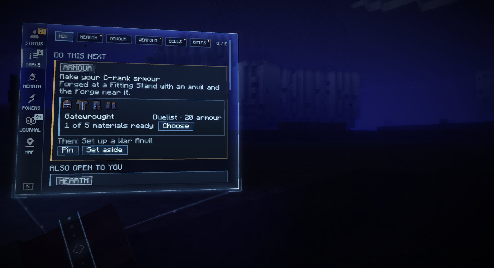<figcaption><span class="tag real">Real</span><b>Tasks, at your window size.</b> The panel sits in one corner. You see one step. The other eleven are behind six tabs and a scroll.</figcaption></figure>
    <figure>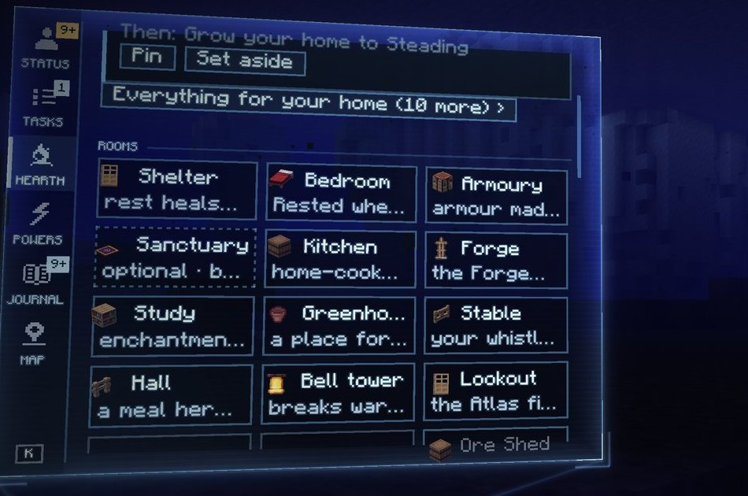<figcaption><span class="tag real">Real</span><b>Hearth.</b> "rest heals…", "armour mad…", "enchantmen…". Every tile has a line you can't read.</figcaption></figure>
    <figure>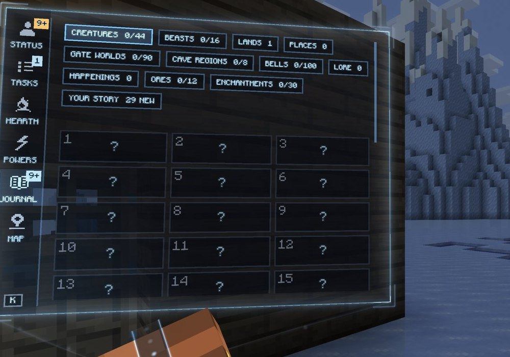<figcaption><span class="tag real">Real</span><b>Journal.</b> Twelve chips take the top third. Under them, 44 numbered boxes each holding a question mark.</figcaption></figure>
    <figure>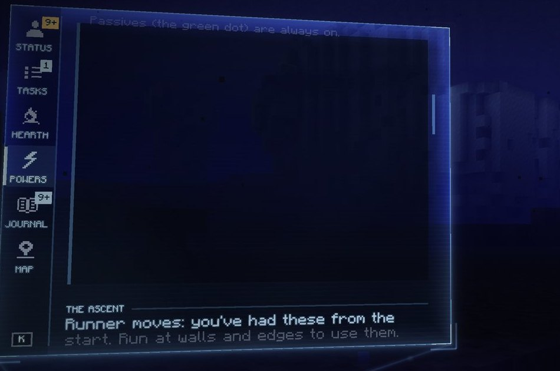<figcaption><span class="tag real">Real</span><b>Powers, one scroll down.</b> With all 63 powers the detail card is an empty box as tall as the panel. Below it the body's moves are paragraphs.</figcaption></figure>
  </div>
  <div class="col" style="margin-top:26px">
    <p>Other things I found: recipes are written out as sentences ("Craft it from two sticks, a copper ingot, a block of wool and three planks") although the game can already draw a recipe grid. One action has four names: Pin on Tasks, Track on the Hearth page, Track it in the Hall, Set as destination on the map. Tab means three different things on three screens. Item names in the bag show in Minecraft's purple box inside the band's blue glass.</p>
    <p><b>The bar already exists.</b> The Hall of Arms does the opposite of the K menu, and you said it looks amazing:</p>
  </div>
  <figure>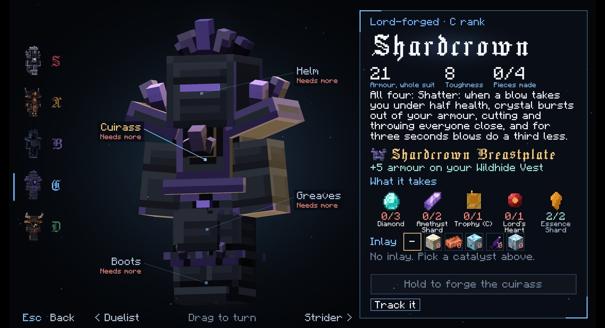<figcaption><span class="tag real">Real</span><b>The Hall of Arms, 9 November.</b> The thing itself in the middle. Its siblings down the left. One panel that only talks about what you're looking at. Big numbers, real items with what you have and need, keys along the foot.</figcaption></figure>
</section>

<section class="col">
  <p class="eyebrow">2 · The idea</p>
  <p class="thesis">The band shows you things, and speaks only about the one you point at.</p>
  <ol class="changes">
    <li><b>One stage.</b> K fills your view with the band's glass, laid out on the same sheet the Hall uses, instead of a slab in the corner.</li>
    <li><b>One layout everywhere.</b> The thing in the middle, its neighbours beside it, one panel of words about it, one bar of keys under it. On K, in the Hall, in the bag.</li>
    <li><b>Pictures before sentences.</b> The real item with what you have and need. A recipe drawn as a recipe. A needle and a distance. What you haven't found is a black shape.</li>
    <li><b>No tabs inside tabs.</b> The six goals become six lanes on one view. The Journal's twelve categories become shelves on one wall.</li>
    <li><b>One word and one key for each thing.</b> Track. Esc goes back, Tab moves to the next thing, hold to commit.</li>
    <li><b>A word budget, checked by a test,</b> so the wall of text can't grow back when the next system is added.</li>
  </ol>
</section>

<section class="wide">
  <div class="col"><p class="eyebrow">3 · Before and after</p><h2>The same view, the same content</h2>
  <p>Flip each one. The first pair is exact: the same C-rank save, the same frame of your view, the same twelve open steps.</p></div>

  <figure class="flip" data-flip>
    <div class="tabs"><button type="button" aria-pressed="false" data-src="shots/real_tasks_c_rank.jpg" data-cap="Real. Tasks at C-rank. One step, then tabs and scrolling for the rest.">Today</button><button type="button" aria-pressed="true" data-src="shots/mock_tasks_dense.jpg" data-cap="Mock-up, over the same frame. The step in front with its four pieces and five materials, and every other open step in its lane. No tabs. Twelve steps on one view.">Proposed</button></div>
    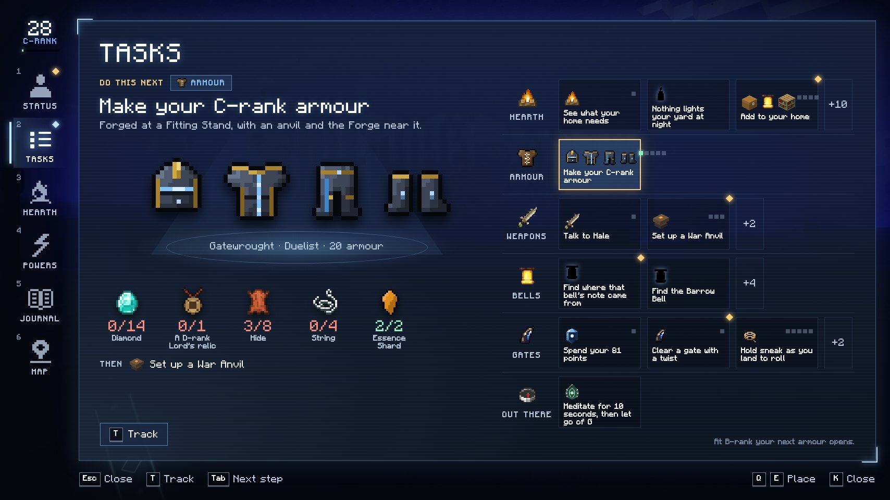<figcaption></figcaption>
  </figure>

  <figure class="flip" data-flip>
    <div class="tabs"><button type="button" aria-pressed="false" data-src="shots/real_tasks_moment_small_window.jpg" data-cap="Real. Your moment: the fire set, a bed built, what next? 76 words. This one was taken in a half-size window, so the panel looks bigger here than on your screen.">Today</button><button type="button" aria-pressed="true" data-src="shots/mock_tasks_moment.jpg" data-cap="Mock-up, by day, at your window size. Both recipes are drawn the way Minecraft draws a recipe. One line of why. Everything else that's open is on the right.">Proposed</button></div>
    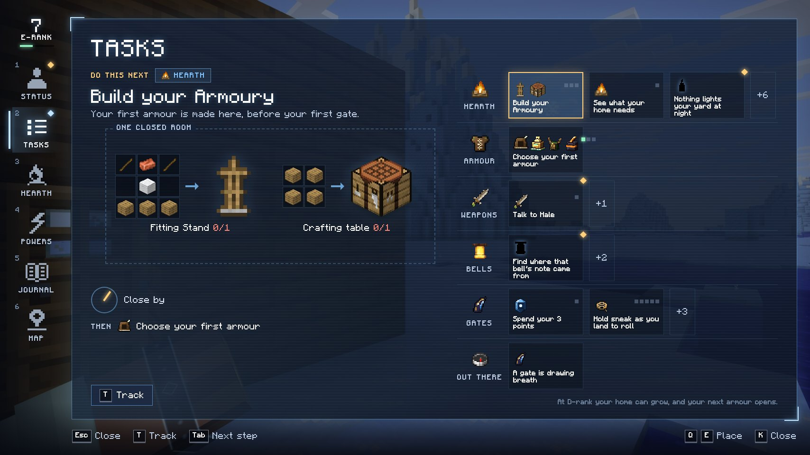<figcaption></figcaption>
  </figure>

  <figure class="flip" data-flip>
    <div class="tabs"><button type="button" aria-pressed="false" data-src="shots/real_hearth_rooms.jpg" data-cap="Real. Hearth, second screen of four.">Today</button><button type="button" aria-pressed="true" data-src="shots/mock_hearth_dense.jpg" data-cap="Mock-up, same home. Every room is its own block: warm when built, amber for what's next, dim when you could build it, a black shape when you haven't found its key piece. The panel reads the room you point at.">Proposed</button></div>
    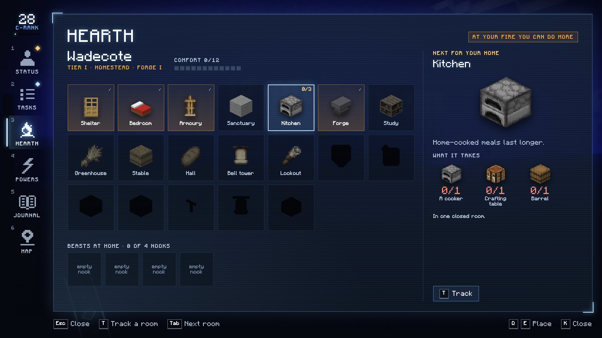<figcaption></figcaption>
  </figure>

  <figure class="flip" data-flip>
    <div class="tabs"><button type="button" aria-pressed="false" data-src="shots/real_journal_creatures.jpg" data-cap="Real. Journal, Creatures.">Today</button><button type="button" aria-pressed="true" data-src="shots/mock_journal.jpg" data-cap="Mock-up. One wall. Found things are themselves, unfound are dark. Gate worlds show their paintings. The pictures on the left jump the wall. Creatures are shown as their eggs here; decision 5 is about drawing the creature itself.">Proposed</button></div>
    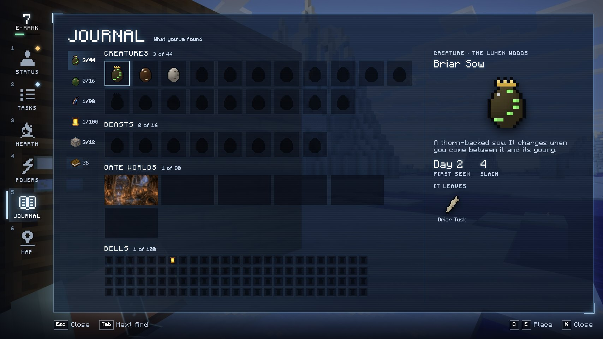<figcaption></figcaption>
  </figure>

  <figure class="flip" data-flip>
    <div class="tabs"><button type="button" aria-pressed="false" data-src="shots/real_status.jpg" data-cap="Real. Status, first screen of about four. Below it: truths, the road, titles and latents as paragraphs.">Today</button><button type="button" aria-pressed="true" data-src="shots/mock_status_dense.jpg" data-cap="Mock-up, same save. You, wearing what you wear (a sample figure here). The next three stops as pictures. All 32 truths as marks: point at one for what it takes. Nothing scrolls.">Proposed</button></div>
    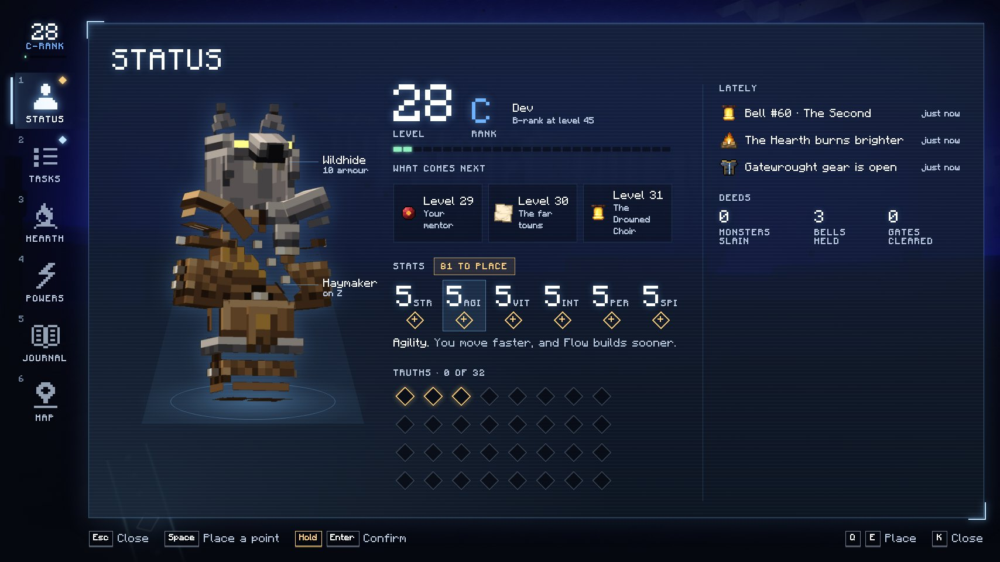<figcaption></figcaption>
  </figure>

  <figure class="flip" data-flip>
    <div class="tabs"><button type="button" aria-pressed="false" data-src="shots/real_powers.jpg" data-cap="Real. Powers with all 63. This page is already the band's best; it scrolls for three more screens.">Today</button><button type="button" aria-pressed="true" data-src="shots/mock_powers_dense.jpg" data-cap="Mock-up. All 63 fit with no scroll. The panel always shows a power, so there is no empty box. Your body's moves are a strip of icons.">Proposed</button></div>
    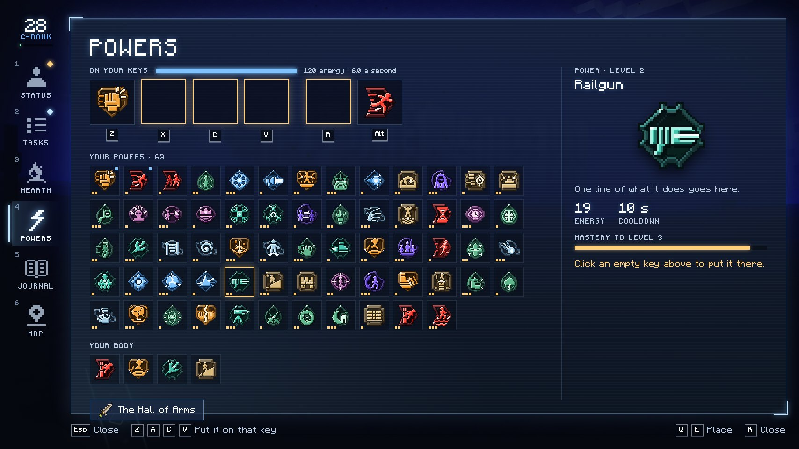<figcaption></figcaption>
  </figure>
</section>

<section class="wide">
  <div class="col"><p class="eyebrow">4 · Try it</p><h2>Click through the band</h2>
  <p>This is a mock-up you can use, not the game. Click the stage first so it takes your keys. The font here is a look-alike; the still pictures above use the real one.</p></div>
  <div class="seg" role="group" aria-label="Sample">
    <span class="note">Sample:</span>
    <button type="button" id="smp-moment" aria-pressed="true">Your moment (E-rank)</button>
    <button type="button" id="smp-dense" aria-pressed="false">A lot open (C-rank)</button>
    <button type="button" id="smp-fresh" aria-pressed="false">A new hunter</button>
  </div>
  <div class="protoWrap" id="protoWrap"><div id="proto"></div></div>
  <div class="col" style="margin-top:16px">
    <p><b>Things to try.</b> On Tasks, click "Choose your first armour" in the Armour lane, click a suit, then "See them worn" (that opens a real screenshot of the Hall's line-up; click a suit there, or the bottom left to go back). Press <kbd>T</kbd> to track it, then <kbd>K</kbd> to shut the band and see it on the HUD. Click another step and press <kbd>X</kbd> to set it aside, then <kbd>Z</kbd> to undo. <kbd>Tab</kbd> walks the steps, <kbd>Esc</kbd> goes back one step, <kbd>1</kbd> to <kbd>6</kbd> or <kbd>Q</kbd> <kbd>E</kbd> change place. On Status, press <kbd>Space</kbd> to place a point and <kbd>Enter</kbd> to confirm.</p>
    <p class="note">What's pretend: all the numbers and names are sample data, a click stands in for a hold, and there is no sound or unfold. Only the E-rank sample has every place filled in.</p>
  </div>
</section>

<section class="wide">
  <div class="col"><p class="eyebrow">5 · The rest of the system</p><h2>The same parts everywhere</h2>
  <p>Every screen is built from one small kit. This is what makes the band, the bag and the workshops feel like one thing.</p></div>
  <figure>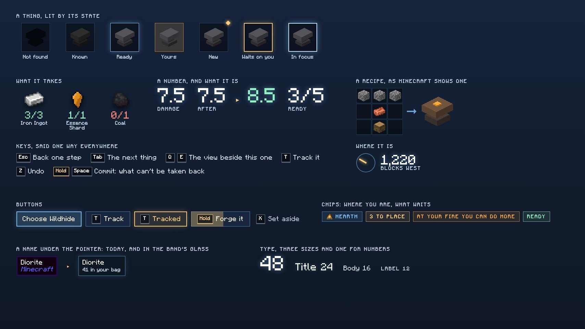<figcaption><span class="tag mock">Mock-up</span><b>The kit.</b> One way to show a thing and its state. One way to show what something takes. One set of keys. Item names move from the purple box into the band's glass.</figcaption></figure>

  <div class="col" style="margin-top:34px"><h3>The Tab glance</h3><p>You said "the tab menu". I took that to mean the panel you get while holding Tab. It keeps every fact and its width, and gets a third shorter: the labels become marks, and your step is one line with what it takes as items.</p></div>
  <div class="pair two">
    <figure>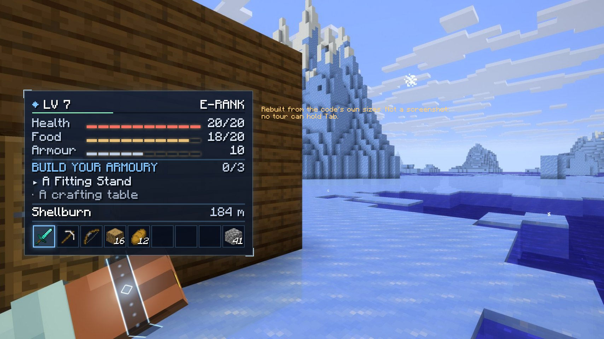<figcaption><span class="tag mock">Rebuilt from the code</span><b>Today.</b> I couldn't screenshot this one (no tour can hold Tab), so this is drawn from the code's own sizes and words.</figcaption></figure>
    <figure>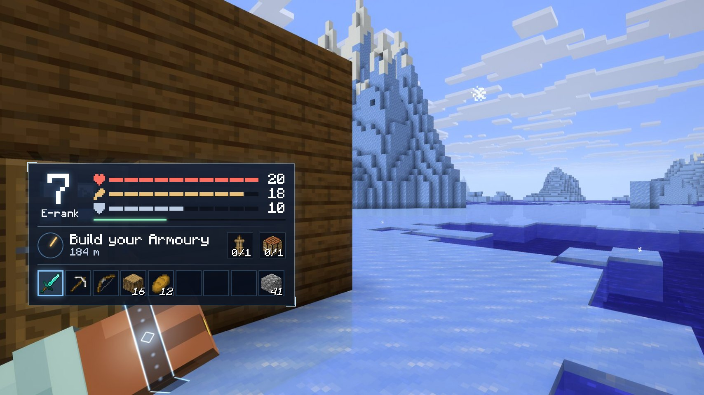<figcaption><span class="tag mock">Mock-up</span><b>Proposed.</b> Same text size as today, so it reads as fast while you move.</figcaption></figure>
  </div>

  <div class="col" style="margin-top:34px"><h3>The Hall, pushed further</h3><p>The Hall stays its own place. It takes three things from the system: "What makes it different" becomes marks with numbers instead of two paragraphs, the foot becomes the shared key bar, and Track gets its key. The War Anvil's "At most it can take Temper VI…" becomes six pips. The Inscribing Table's "6 levels and 2 lapis" becomes the two items with counts.</p></div>
  <div class="pair two">
    <figure>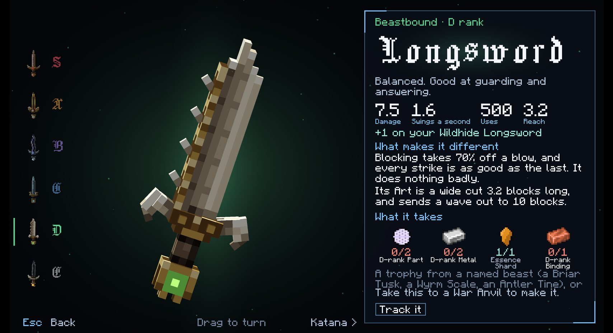<figcaption><span class="tag real">Real</span><b>Today.</b> Still the best screen in the game. The right panel carries two paragraphs.</figcaption></figure>
    <figure>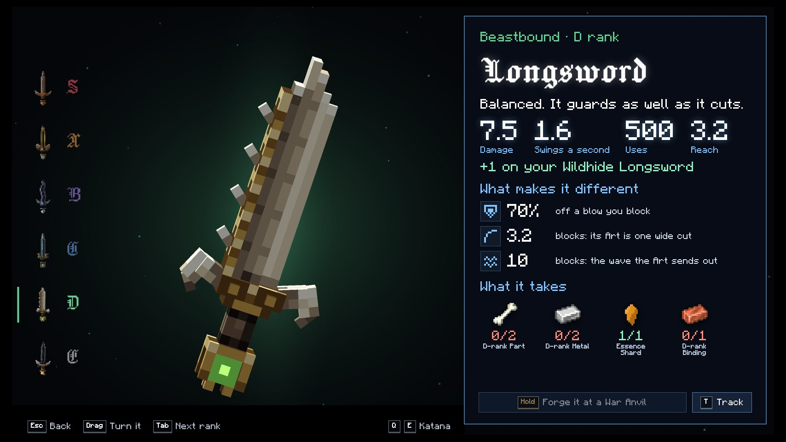<figcaption><span class="tag mock">Mock-up over the real shot</span><b>Proposed.</b> 70%, 3.2 and 10 as numbers you can compare across weapons. The mark shapes are placeholders.</figcaption></figure>
  </div>
  <div class="col" style="margin-top:22px">
    <p><b>Two doors to every place.</b> The Hall already works this way: from K you look and track, at the anvil you forge. The Hearth gets the same rule. Your Anchor opens the same Hearth place the band does, with building the next tier added, and the separate guide window goes away.</p>
    <p><b>Two materials, one layout.</b> Blue glass is what you wear: the band, the bag, the glance, the cards. Firelight is where you stand: the Hall, the anvil, the table. The material tells you which you're in; everything else is the same.</p>
  </div>
</section>

<section class="col">
  <p class="eyebrow">6 · Where everything goes</p>
  <h2>Nothing you can do today is lost</h2>
  <p>Every section on every page has a new home. Two copies are folded into one. Five things go because something else already says them.</p>
  <details open><summary>Tasks</summary><div class="tbl"><table>
    <tr><th>Today</th><th>Becomes</th></tr>
    <tr><td>Tabs: Now, Hearth, Armour, Weapons, Bells, Gates</td><td><span class="gone">Gone.</span> Six lanes on one view. A lane appears when it first has something, as a tab does now.</td></tr>
    <tr><td>Do this next, in full</td><td>The step in front: its picture, name, one line, what it takes.</td></tr>
    <tr><td>Where each need comes from, as a sentence</td><td>The real item with have and need. A made thing shows its recipe. The sentence is the tip on the item.</td></tr>
    <tr><td>Pin</td><td>Track, on <kbd>T</kbd>. Same thing, one name.</td></tr>
    <tr><td>Set aside, Undo, Later, Choose, See them worn</td><td>All kept. Later is a "+6" tile at the end of a lane.</td></tr>
    <tr><td>Every system's steps (core.api.Goals)</td><td><span class="new">Kept exactly.</span> New systems still show up here. One optional extra: a picture.</td></tr>
  </table></div></details>
  <details><summary>Status</summary><div class="tbl"><table>
    <tr><th>Today</th><th>Becomes</th></tr>
    <tr><td>Face, name, level, XP, rank</td><td>You as a figure, level and rank as big numbers.</td></tr>
    <tr><td>Six stats, place then confirm, undo</td><td>The same. Confirm is a hold.</td></tr>
    <tr><td>This gate, Deep Pack, This room, Riding</td><td>A chip in the header only while it applies. Click it for its panel.</td></tr>
    <tr><td>A decision waiting</td><td>First in the panel, with Y and N.</td></tr>
    <tr><td>Newest journal lines</td><td>"Lately", three lines.</td></tr>
    <tr><td>Truths, titles, latents</td><td>Marks. Lit when true, amber for the closest three. The panel reads the one you point at.</td></tr>
    <tr><td>The road</td><td>"What comes next": three stops as pictures. All of it one click away.</td></tr>
    <tr><td>Records (on the Journal today)</td><td>Move here as Deeds.</td></tr>
    <tr><td>"Now · 2 more on the Tasks page"</td><td><span class="gone">Gone.</span> The glint on Tasks says it.</td></tr>
  </table></div></details>
  <details><summary>Hearth</summary><div class="tbl"><table>
    <tr><th>Today</th><th>Becomes</th></tr>
    <tr><td>Name, tier, comfort</td><td>The header.</td></tr>
    <tr><td>Next for your home (a copy of the Tasks card)</td><td><span class="gone">Folded.</span> It's the amber room.</td></tr>
    <tr><td>19 room tiles with cut-off text</td><td>Rooms as their own block, lit by state. The panel reads the whole line.</td></tr>
    <tr><td>A room's pieces and where they come from</td><td>The panel: real items with have and need.</td></tr>
    <tr><td>Make it look good</td><td>Inside the built room's panel.</td></tr>
    <tr><td>Beasts, nooks, rumours, wants</td><td>A strip of nooks with the beasts in them. Kinds you haven't met are dark shapes.</td></tr>
    <tr><td>The guide window at your Anchor</td><td><span class="gone">Folded</span> into this place, with the next tier added at the Anchor.</td></tr>
  </table></div></details>
  <details><summary>Powers</summary><div class="tbl"><table>
    <tr><th>Today</th><th>Becomes</th></tr>
    <tr><td>Your keys, your powers, pick then press a key</td><td>The same, 13 across.</td></tr>
    <tr><td>The power's card</td><td>The panel. Never empty.</td></tr>
    <tr><td>The Ascent, The Body, Crafts, The Veil</td><td>Strips of icons. The panel says how each one is done.</td></tr>
  </table></div></details>
  <details><summary>Journal</summary><div class="tbl"><table>
    <tr><th>Today</th><th>Becomes</th></tr>
    <tr><td>12 category chips</td><td>Pictures with counts down the left. They jump the wall; they aren't a mode.</td></tr>
    <tr><td>Numbered "?" boxes</td><td>The things themselves. Ordinary unfound things are black shapes. Bosses and Lords stay sealed: no shape, no name.</td></tr>
    <tr><td>Bells as 100 numbers</td><td>100 bells. Held ones lit, leads amber.</td></tr>
    <tr><td>Tracking and Also on (chains, bounties)</td><td>Move to Tasks, in the Out there lane. They're things to do.</td></tr>
    <tr><td>Log and Recent messages</td><td>One timeline, Your story.</td></tr>
  </table></div></details>
  <details><summary>Map, bag, cards, plates</summary><div class="tbl"><table>
    <tr><th>Today</th><th>Becomes</th></tr>
    <tr><td>The map in the world</td><td>Unchanged. It takes the shared key bar.</td></tr>
    <tr><td>The bag and the chests</td><td>Unchanged, except item names show in the band's glass.</td></tr>
    <tr><td>Toasts, choice cards, the first-power cards</td><td>Unchanged. They take the shared key caps.</td></tr>
    <tr><td>Creature plates, health line, power bar</td><td>Unchanged.</td></tr>
  </table></div></details>
</section>

<section class="wide">
  <div class="col"><p class="eyebrow">7 · Three ways to do it</p><h2>I looked at three directions</h2></div>
  <div class="pair two">
    <figure>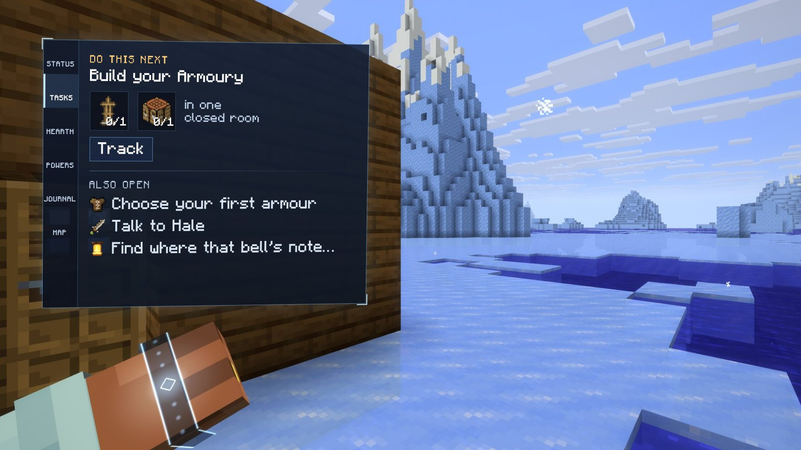<figcaption><span class="tag mock">Study</span><b>A. Tidy the band.</b> The slab stays. Inner tabs go, rows get pictures. Cheap and safe, but the slab still can't hold a home, a wall of finds or a figure, so it can't reach the Hall's bar.</figcaption></figure>
    <figure>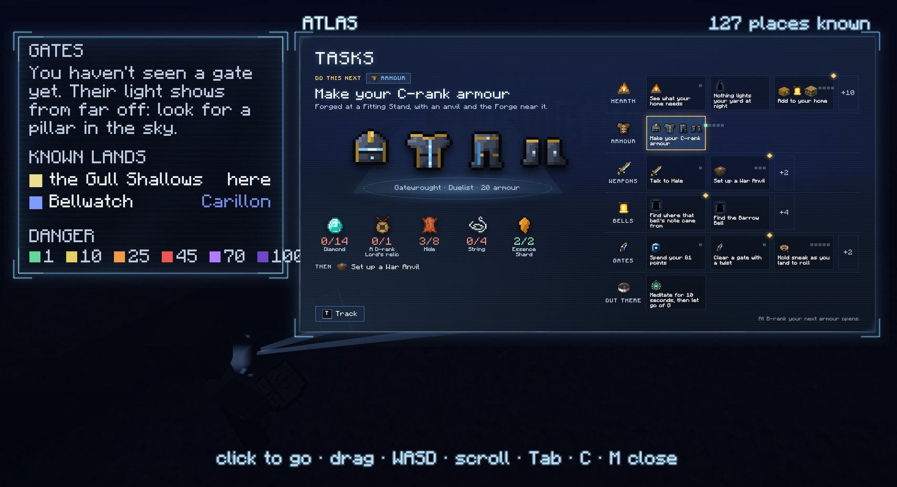<figcaption><span class="tag mock">Study</span><b>C. The band in the world.</b> Every K page as a projection in front of your character, the way the map opens. The most striking. It needs room behind you, falls back in caves and fights, and adds a camera move to every open.</figcaption></figure>
  </div>
  <div class="col" style="margin-top:22px">
    <p><b>I recommend B, the one stage you clicked through above.</b> It's the only one that fixes the cause: the slab. It reuses what the Hall already proved, and it can be built in stages with today's band one setting away.</p>
    <p><b>What you give up with B.</b> Today the band leaves the right half of your view clear. The stage covers the view, with the world dim behind it, like the map's card. So the map's rule comes with it: if you're hit, or something hostile comes within 8 blocks, it folds at once. Also, Tab and Q/E change what they do inside K.</p>
    <p class="note">C is worth one experiment later: Status as your real character, standing where you stand.</p>
  </div>
</section>

<section class="wide">
  <div class="col"><p class="eyebrow">8 · How it behaves</p><h2>The same keys, and the hard cases</h2></div>
  <div class="col"><div class="tbl"><table>
    <tr><th>You want to</th><th>Mouse</th><th>Key</th><th>Today</th></tr>
    <tr><td>See what a thing is</td><td>Point at it</td><td>Arrows</td><td>The same</td></tr>
    <tr><td>Bring it in front</td><td>Click</td><td><kbd>Tab</kbd></td><td>Tab is the next page in K, the next gate on the map, the next piece in the Hall</td></tr>
    <tr><td>Go back one step</td><td></td><td><kbd>Esc</kbd></td><td>The same</td></tr>
    <tr><td>Go to the view beside this one</td><td>Click the rail</td><td><kbd>Q</kbd> <kbd>E</kbd>, or <kbd>1</kbd> to <kbd>6</kbd></td><td>Q/E are goal tabs, journal chips, Hall wings</td></tr>
    <tr><td>Keep it on your screen</td><td>Track</td><td><kbd>T</kbd></td><td>Pin, Track, Track it, Set as destination</td></tr>
    <tr><td>Do something you can't take back</td><td>Hold</td><td>Hold <kbd>Space</kbd></td><td>Hold in the Hall, click elsewhere</td></tr>
    <tr><td>Take it back</td><td>Undo</td><td><kbd>Z</kbd></td><td>Z in the bag only</td></tr>
  </table></div>
  <p class="note" style="margin-top:10px">The map keeps Q and E for turning, because it's a camera.</p></div>
  <div class="pair two" style="margin-top:18px">
    <figure>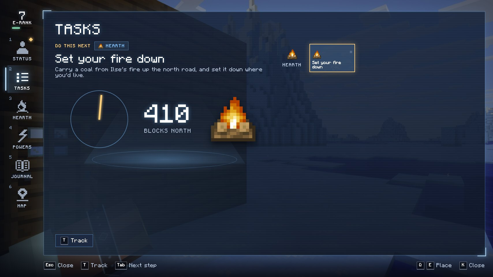<figcaption><span class="tag mock">Mock-up</span><b>A new hunter.</b> One step, one lane. Nothing is listed that hasn't opened.</figcaption></figure>
    <figure>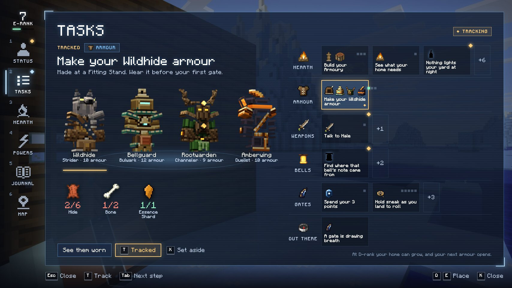<figcaption><span class="tag mock">Mock-up</span><b>After you choose.</b> The step renames itself, lists what that suit takes, and shows as tracked.</figcaption></figure>
    <figure>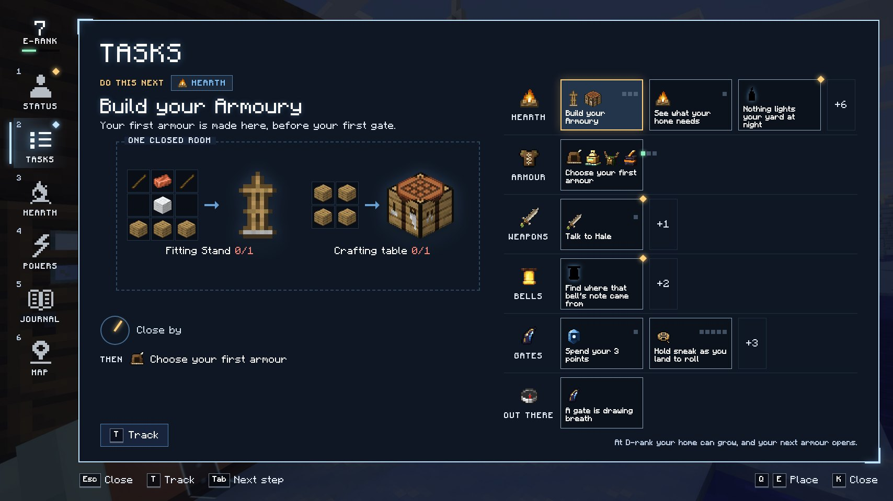<figcaption><span class="tag mock">Mock-up</span><b>Higher contrast.</b> With Minecraft's High Contrast option the glass goes solid and the quiet text brightens, as the Hall already does.</figcaption></figure>
    <figure>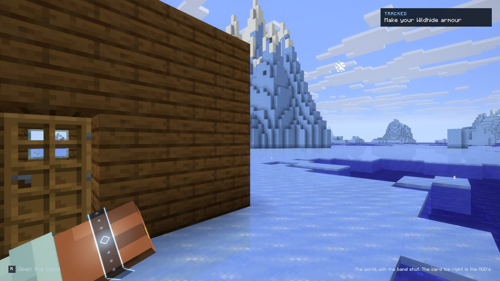<figcaption><span class="tag mock">Mock-up</span><b>Shut.</b> What you tracked leads the HUD card, as Pin does today.</figcaption></figure>
  </div>
  <div class="col" style="margin-top:22px">
    <ul class="plain">
      <li><b>If the list hasn't arrived yet,</b> the stage opens and the panel says "Reading…". You can still change place or shut it.</li>
      <li><b>If the server says no</b> (too far, a stale choice), the line under the button says why, in the server's words.</li>
      <li><b>If a step finishes while you look at it,</b> its tile ticks and the next step takes its place. Nothing moves under your pointer.</li>
      <li><b>Keys alone work for everything.</b> The narrator reads the panel's first line when you land on a thing, as it does now.</li>
      <li><b>Words are capped.</b> Names and numbers on the stage. One sentence of 14 words or fewer in the panel. Longer help is a tip on the thing it explains. A test fails any step, room or power that breaks this.</li>
    </ul>
  </div>
</section>

<section class="col">
  <p class="eyebrow">9 · How it gets built</p>
  <h2>In stages, with today's band one setting away</h2>
  <ol class="stages">
    <li><b>The proof, then you play it.</b> The shared sheet, the kit, the new K shell, and the Tasks place. Nothing else moves until you've played this.</li>
    <li><b>Status and Powers.</b></li>
    <li><b>Hearth and the Journal wall.</b> Your Anchor becomes the Hearth's second door.</li>
    <li><b>The bag's item names, the Tab glance, the cards.</b></li>
    <li><b>The workshops.</b> The Hall's panel and key bar, the anvil's pips, the table's costs, then the boards and books.</li>
    <li><b>Clean up.</b> The old band and its sections are deleted one build after you've played the new one.</li>
  </ol>
  <p style="margin-top:16px"><b>What stays true.</b> The server still decides everything. Every progression system still puts its steps on Tasks. No boss is named, shown or shaped before you meet it. Other players still see only a glow. No save data changes, so going back is one setting.</p>
  <p><b>The risk I can't answer from here.</b> A glass panel that covers the view costs more to draw than a slab. It must cost no more than the Hall's wall does today on Cinematic at 4K. That needs one timed run on your Mac (decision 7).</p>
</section>

<section class="col">
  <p class="eyebrow">10 · What I checked and what I didn't</p>
  <ul class="plain">
    <li><b>Seen in the game</b> (GitHub's Macs, your window size, today's build): every K page top to bottom, the HUD at rest and in a fight, the first-power cards, the map, the Look screen. From other sessions' tours on 9 Nov: the Hall, the bag and chests, the Inscribing Table.</li>
    <li><b>Read in the code only:</b> the Tab glance, the guide at your Anchor, the Notice Board, the Ledger, the Dream Journal, the Forge Song, sounds and narration.</li>
    <li><b>The mock-up:</b> I did the main journey with keys alone and with the mouse, and rendered it over a bright sky and a dark night.</li>
    <li><b>Not done:</b> nothing ran on your Mac, no frame times were measured, and nobody but me has used the mock-up. It can't show sound or feel.</li>
  </ul>
</section>

<section class="col" id="decisions">
  <p class="eyebrow">11 · Your decisions</p>
  <h2>Seven things only you can decide</h2>
  <p>Yes takes my recommendation. Your answers save as you click, and a note on any line goes with it.</p>
  <p class="status" id="status" role="status">Connecting to the answers store…</p>

  <div class="ask" data-q="direction"><h3>1. Build direction B, the one stage?</h3><p class="rec">Recommended: yes. No means tell me A or C in the note.</p><div class="ans"><button type="button" class="yes" aria-pressed="false">Yes</button><button type="button" class="no" aria-pressed="false">No</button></div><textarea id="note-direction" aria-label="Note on decision 1" placeholder="A note, if you want"></textarea></div>
  <div class="ask" data-q="tab-menu"><h3>2. By "the tab menu" did you mean the panel you get while holding Tab?</h3><p class="rec">I assumed yes and redesigned it (section 5). If you meant something else, say what in the note.</p><div class="ans"><button type="button" class="yes" aria-pressed="false">Yes</button><button type="button" class="no" aria-pressed="false">No</button></div><textarea id="note-tab-menu" aria-label="Note on decision 2" placeholder="A note, if you want"></textarea></div>
  <div class="ask" data-q="words-keys"><h3>3. One word and one set of keys?</h3><p class="rec">Recommended: yes. "Track" everywhere, on T (Pin stays the bag's word). Tab becomes "the next thing". Q and E step through K's six places.</p><div class="ans"><button type="button" class="yes" aria-pressed="false">Yes</button><button type="button" class="no" aria-pressed="false">No</button></div><textarea id="note-words-keys" aria-label="Note on decision 3" placeholder="A note, if you want"></textarea></div>
  <div class="ask" data-q="hearth-doors"><h3>4. One Hearth with two doors?</h3><p class="rec">Recommended: yes. Your Anchor opens the same Hearth place as K, with building the next tier added. The separate guide window goes.</p><div class="ans"><button type="button" class="yes" aria-pressed="false">Yes</button><button type="button" class="no" aria-pressed="false">No</button></div><textarea id="note-hearth-doors" aria-label="Note on decision 4" placeholder="A note, if you want"></textarea></div>
  <div class="ask" data-q="creatures"><h3>5. Try drawing found creatures as themselves in the Journal?</h3><p class="rec">Recommended: yes, as a trial in stage 2. If it costs frames, they stay as their eggs.</p><div class="ans"><button type="button" class="yes" aria-pressed="false">Yes</button><button type="button" class="no" aria-pressed="false">No</button></div><textarea id="note-creatures" aria-label="Note on decision 5" placeholder="A note, if you want"></textarea></div>
  <div class="ask" data-q="stage-zero"><h3>6. Stage 0 first, then you play before anything else is built?</h3><p class="rec">Recommended: yes. Tasks and the new shell only, with today's band one setting away.</p><div class="ans"><button type="button" class="yes" aria-pressed="false">Yes</button><button type="button" class="no" aria-pressed="false">No</button></div><textarea id="note-stage-zero" aria-label="Note on decision 6" placeholder="A note, if you want"></textarea></div>
  <div class="ask" data-q="mac-run"><h3>7. One timed run on your Mac when stage 0 is ready?</h3><p class="rec">Recommended: yes. It launches the game for a few minutes to time the stage against today's band on Cinematic at 4K. I won't run it without your OK.</p><div class="ans"><button type="button" class="yes" aria-pressed="false">Yes</button><button type="button" class="no" aria-pressed="false">No</button></div><textarea id="note-mac-run" aria-label="Note on decision 7" placeholder="A note, if you want"></textarea></div>

  <div class="seg"><button type="button" id="yes-all">Yes to everything not answered</button></div>
  <p class="note">Still uncertain after all this: the real frame cost; whether black shapes for creatures tease too much or too little; how the longest names hold in other languages; and anything about sound and feel.</p>
</section>

<script>
window.AW_ASSETS = 'proto/assets/';
/* Sample data for the prototype: Euan's moment (SPEC 27.13). E-rank, level 7, the fire set, a bed built, back home:
   what next? Titles, names and numbers are the game's own, read from tour shots and data files on 10 Nov 2026.
   Everything here is simulated: the real page reads it from the server (tasks_view, HearthView, the profile). */
window.AW_DATA = {
  you: { name: 'Euan', level: 7, rank: 'E', xp: 0.38, points: 3, title: '',
    stats: [['STR', 'Strength', 6, 'Your blows hit harder.'], ['AGI', 'Agility', 7, 'You move faster, and Flow builds sooner.'],
      ['VIT', 'Vitality', 5, 'More health, and you mend faster.'], ['INT', 'Intellect', 5, 'More energy, and powers come back sooner.'],
      ['PER', 'Perception', 5, 'You see danger and hidden things from further off.'], ['SPI', 'Spirit', 5, 'The Veil holds you longer.']],
    road: [[8, 'Essence', 'i_essence_shard'], [9, 'A Power Core', 'i_power_core'], [10, 'The D-rank trial', 'i_trophy']],
    wearing: 'wildhide',
    truths: { yours: 2, near: [
      ['I am fast.', 'Sprint 5,000 blocks.', 0.62, 'You run a little faster for good.'],
      ['I am awake in my dreams.', 'Become lucid in five dreams.', 0.2, 'You start with 20 more Lucidity.'],
      ['I am never caught.', 'Dodge 100 blows.', 0.41, 'Your dodge comes back sooner.']] },
    lately: [['i_handbell', 'Bell #07 · The Ember Bell', '1 min'], ['b_bed', 'Bedroom recognised', '1 min'], ['v_campfire', 'First shelter', '1 min']],
    deeds: [[38, 'Monsters slain'], [1, 'Bells held'], [0, 'Gates cleared']] },

  lanes: [['hearth', 'Hearth', 'v_campfire'], ['armour', 'Armour', 'i_wildhide_chestplate'], ['weapons', 'Weapons', 'w_longsword'],
    ['bells', 'Bells', 'v_bell'], ['gates', 'Gates', 'i_core_shard'], ['out', 'Out there', 'v_compass_00']],

  steps: [
    { key: 'hearth/armoury', lane: 'hearth', top: true, kind: 'make', title: 'Build your Armoury', why: 'Your first armour is made here, before your first gate.',
      pics: ['v_armor_stand', 'b_crafting_table'], room: 'One closed room',
      make: [
        { name: 'Fitting Stand', icon: 'v_armor_stand', have: 0, need: 1, w: 3, cells: ['v_stick', 'v_copper_ingot', 'v_stick', '', 'b_wool', '', 'b_planks', 'b_planks', 'b_planks'] },
        { name: 'Crafting table', icon: 'b_crafting_table', have: 0, need: 1, w: 2, cells: ['b_planks', 'b_planks', 'b_planks', 'b_planks'] }],
      place: ['Close by', 35], then: 'armour/first', met: 0, of: 3 },
    { key: 'hearth/guide', lane: 'hearth', kind: 'thing', title: 'See what your home needs', why: 'Right-click your campfire.', pics: ['v_campfire'], big: 'v_campfire', place: ['Close by', 35], met: 0, of: 1 },
    { key: 'kin/light', lane: 'hearth', kind: 'lead', title: 'Nothing lights your yard at night', why: 'Something out there glows. Look along the edges of woods at dusk.', pics: ['v_lantern'], big: 'v_lantern', dark: true, isNew: true },
    { key: 'armour/first', lane: 'armour', kind: 'choose', title: 'Choose your first armour', why: 'Made at a Fitting Stand. Wear it before your first gate.',
      pics: ['i_wildhide_helmet', 'i_bellguard_helmet', 'i_rootwarden_helmet', 'i_amberwing_helmet'],
      choices: [
        { id: 'wildhide', name: 'Wildhide', role: 'Strider', armour: 10, needs: [['v_leather', 'Hide', 2, 6], ['v_bone', 'Bone', 1, 2], ['i_essence_shard', 'Essence Shard', 1, 1]] },
        { id: 'bellguard', name: 'Bellguard', role: 'Bulwark', armour: 12, needs: [['i_bell_bronze_ingot', 'Bell bronze', 0, 4], ['v_leather', 'Hide', 2, 4], ['i_essence_shard', 'Essence Shard', 1, 1]] },
        { id: 'rootwarden', name: 'Rootwarden', role: 'Channeler', armour: 9, needs: [['b_log', 'Old wood', 0, 6], ['i_antler_tine', 'Antler Tine', 0, 1], ['v_string', 'String', 0, 3], ['v_feather', 'Feather', 0, 2], ['i_essence_shard', 'Essence Shard', 1, 1]] },
        { id: 'amberwing', name: 'Amberwing', role: 'Duelist', armour: 10, needs: [['i_dusk_feather', 'Dusk Feather', 0, 4], ['v_leather', 'Hide', 2, 4], ['v_string', 'String', 0, 2], ['i_essence_shard', 'Essence Shard', 1, 1]] }],
      met: 1, of: 3 },
    { key: 'weapons/hale', lane: 'weapons', kind: 'go', title: 'Talk to Hale', why: 'He has a free weapon for you.', pics: ['w_longsword'], big: 'w_longsword', place: ['1,220 blocks west', 270], isNew: true, met: 0, of: 1 },
    { key: 'bells/lead', lane: 'bells', kind: 'lead', title: 'Find where that bell’s note came from', why: 'You heard it from your fire, somewhere to the north.', pics: ['v_bell'], big: 'v_bell', dark: true, place: ['North of here', 0], isNew: true },
    { key: 'rank/points', lane: 'gates', kind: 'thing', title: 'Spend your 3 points', why: 'Points you haven’t spent make you no stronger.', pics: ['i_power_core'], big: 'i_power_core', link: 'status', met: 0, of: 1 },
    { key: 'trail/hunter', lane: 'gates', kind: 'thing', title: 'Hold sneak as you land to roll', why: 'A roll takes the sting out of a long fall.', pics: ['i_runner_rope'], big: 'i_runner_rope', want: true, met: 0, of: 5 },
    { key: 'out/gate', lane: 'out', kind: 'go', title: 'A gate is drawing breath', why: 'An E-rank gate. Its floors make you stronger.', pics: ['i_core_shard'], big: 'i_core_shard', place: ['320 blocks north', 350] },
  ],
  later: { hearth: 6, armour: 0, weapons: 1, bells: 2, gates: 3 },
  foot: 'At D-rank your home can grow, and your next armour opens.',

  // ---- the same page with a lot on it: C-rank, as the 10 Nov tour had it (run 42754069258) ----
  dense: {
    steps: [
      { key: 'armour/rank', lane: 'armour', top: true, kind: 'pieces', title: 'Make your C-rank armour', why: 'Forged at a Fitting Stand, with an anvil and the Forge near it.',
        pics: ['i_gatewrought_helmet', 'i_gatewrought_chestplate', 'i_gatewrought_leggings', 'i_gatewrought_boots'], bigs: ['i_gatewrought_helmet', 'i_gatewrought_chestplate', 'i_gatewrought_leggings', 'i_gatewrought_boots'],
        label: 'Gatewrought · Duelist · 20 armour', needs: [['v_diamond', 'Diamond', 0, 14], ['i_keepsake', 'A D-rank Lord’s relic', 0, 1], ['v_leather', 'Hide', 3, 8], ['v_string', 'String', 0, 4], ['i_essence_shard', 'Essence Shard', 2, 2]],
        then: 'weapons/anvil', met: 1, of: 5 },
      { key: 'hearth/guide', lane: 'hearth', kind: 'thing', title: 'See what your home needs', why: 'Right-click your Anchor.', pics: ['v_campfire'], big: 'v_campfire', place: ['Close by', 35], met: 0, of: 1 },
      { key: 'kin/light', lane: 'hearth', kind: 'lead', title: 'Nothing lights your yard at night', why: 'Something out there glows. Look along the edges of woods at dusk.', pics: ['v_lantern'], big: 'v_lantern', dark: true },
      { key: 'hearth/add', lane: 'hearth', kind: 'thing', title: 'Add to your home', why: 'Three things your home could have next. Pick one.', pics: ['b_chest', 'v_bell', 'b_bookshelf'], big: 'b_chest', isNew: true, met: 0, of: 4 },
      { key: 'weapons/hale', lane: 'weapons', kind: 'go', title: 'Talk to Hale', why: 'He has a free weapon for you.', pics: ['w_longsword'], big: 'w_longsword', place: ['1,220 blocks west', 270], met: 0, of: 1 },
      { key: 'weapons/anvil', lane: 'weapons', kind: 'make', title: 'Set up a War Anvil', why: 'It makes stronger weapons than a crafting table can.',
        pics: ['b_war_anvil'], room: 'Within 6 blocks of your Forge',
        make: [{ name: 'War Anvil', icon: 'b_war_anvil', have: 0, need: 1, w: 3, cells: ['b_cobble', 'b_cobble', 'b_cobble', '', 'v_copper_ingot', '', '', 'b_log', ''] }],
        needs: [['b_cobble', 'Cobblestone', 0, 3], ['v_copper_ingot', 'Copper Ingot', 0, 1], ['b_log', 'Logs', 0, 1]], isNew: true, met: 0, of: 3 },
      { key: 'bells/lead', lane: 'bells', kind: 'lead', title: 'Find where that bell’s note came from', why: 'You heard it from your fire, somewhere to the north.', pics: ['v_bell'], big: 'v_bell', dark: true, place: ['North of here', 0], isNew: true },
      { key: 'bells/lead2', lane: 'bells', kind: 'lead', title: 'Find the Barrow Bell', why: 'A letter spoke of a bell kept under a hill.', pics: ['v_bell'], big: 'v_bell', dark: true },
      { key: 'rank/points', lane: 'gates', kind: 'thing', title: 'Spend your 81 points', why: 'Points you haven’t spent make you no stronger.', pics: ['i_power_core'], big: 'i_power_core', link: 'status', met: 0, of: 1 },
      { key: 'gates/twist', lane: 'gates', kind: 'thing', title: 'Clear a gate with a twist', why: 'Some gates change the rules. Their spoils are better.', pics: ['i_core_shard'], big: 'i_core_shard', isNew: true, met: 0, of: 1 },
      { key: 'trail/hunter', lane: 'gates', kind: 'thing', title: 'Hold sneak as you land to roll', why: 'A roll takes the sting out of a long fall.', pics: ['i_runner_rope'], big: 'i_runner_rope', want: true, met: 0, of: 5 },
      { key: 'out/veil', lane: 'out', kind: 'thing', title: 'Meditate for 10 seconds, then let go of G', why: 'You step out of your body.', pics: ['p_third_eye'], big: 'p_third_eye' },
    ],
    later: { hearth: 10, armour: 0, weapons: 2, bells: 4, gates: 2 }, foot: 'At B-rank your next armour opens.', bg: 'bg_night',
    you: { name: 'Dev', level: 28, rank: 'C', xp: 0.04, points: 81, next: 'B-rank at level 45',
      stats: [['STR', 'Strength', 5, 'Your blows hit harder.'], ['AGI', 'Agility', 5, 'You move faster, and Flow builds sooner.'], ['VIT', 'Vitality', 5, 'More health, and you mend faster.'],
        ['INT', 'Intellect', 5, 'More energy, and powers come back sooner.'], ['PER', 'Perception', 5, 'You see danger and hidden things from further off.'], ['SPI', 'Spirit', 5, 'The Veil holds you longer.']],
      road: [[29, 'Your mentor', 'i_lord_heart'], [30, 'The far towns', 'v_map'], [31, 'The Drowned Choir', 'v_bell']], wearing: 'wildhide',
      truths: { yours: 0, near: [['I am awake in my dreams.', 'Become lucid in five dreams.', 0, 'You start with 20 more Lucidity.'], ['I am fast.', 'Sprint 50 kilometres.', 0.02, 'You move 5% faster.'], ['I am more than my body.', 'Spend ten minutes outside your body.', 0, 'Your cord reaches 64 blocks further.']] },
      lately: [['v_bell', 'Bell #60 · The Second', 'just now'], ['v_campfire', 'The Hearth burns brighter', 'just now'], ['i_gatewrought_chestplate', 'Gatewrought gear is open', 'just now']],
      deeds: [[0, 'Monsters slain'], [3, 'Bells held'], [0, 'Gates cleared']] },
    home: { name: 'Wadecote', tier: 'Tier I · Homestead', comfort: 0, style: 'Forge I', nooks: 4, built: ['shelter', 'bedroom', 'armoury', 'forge'], next: 'kitchen', kin: [] } },

  // ---- a new hunter, minutes in: one thing to do, nothing listed that hasn't opened ----
  fresh: {
    steps: [
      { key: 'hearth/fire', lane: 'hearth', top: true, kind: 'go', title: 'Set your fire down', why: 'Carry a coal from Ilse’s fire up the north road, and set it down where you’d live.', pics: ['v_campfire'], big: 'v_campfire', place: ['410 blocks north', 5], met: 0, of: 1 }],
    later: {}, foot: '' },

  home: { name: 'Shellburn', tier: 'Hearthfire', comfort: 1, style: 'Timber', nooks: 3,
    rooms: [
      ['shelter', 'Shelter', 'v_oak_door', 'built', 'Rest heals here.', []],
      ['bedroom', 'Bedroom', 'b_bed', 'built', 'You wake Rested.', [['b_bed', 'Bed', 1, 1]]],
      ['armoury', 'Armoury', 'v_armor_stand', 'next', 'Armour made here lasts a quarter longer.', [['v_armor_stand', 'Fitting Stand', 0, 1], ['b_crafting_table', 'Crafting table', 0, 1]]],
      ['sanctuary', 'Sanctuary', 'b_wool', 'started', 'Better dreams, and you heal faster.', [['b_bed', 'Bed', 1, 1], ['b_wool', 'Meditation Mat', 0, 1]]],
      ['kitchen', 'Kitchen', 'b_furnace', 'open', 'Home-cooked meals last longer.', [['b_furnace', 'A cooker', 0, 1], ['b_crafting_table', 'Crafting table', 0, 1], ['b_barrel', 'Barrel', 0, 1]]],
      ['forge', 'Forge', 'b_anvil', 'open', 'The Forge can temper higher.', [['b_anvil', 'Anvil', 0, 1], ['b_forge', 'The Forge', 0, 1], ['v_armor_stand', 'Armour stand', 0, 1]]],
      ['study', 'Study', 'b_bookshelf', 'open', 'Enchantments written here go deeper.', [['b_lectern', 'Lectern', 0, 1], ['b_bookshelf', 'Bookshelf', 0, 1]]],
      ['greenhouse', 'Greenhouse', 'v_wheat', 'open', 'A place for herbs, under a glass roof.', [['v_wheat', 'Something growing', 0, 1]]],
      ['stable', 'Stable', 'b_hay', 'open', 'Your whistle reaches twice as far.', [['b_hay', 'Hay bale', 0, 1], ['v_oak_door', 'A gate', 0, 1]]],
      ['hall', 'Hall', 'v_bread', 'open', 'A meal here feeds the whole hall.', [['b_planks', 'A seat', 0, 1], ['b_crafting_table', 'A table', 0, 1]]],
      ['bell_tower', 'Bell tower', 'v_bell', 'open', 'You hear of a break two days sooner.', [['v_bell', 'A bell', 0, 1]]],
      ['lookout', 'Lookout', 'v_spyglass', 'open', 'The Atlas fills in round your home.', []],
      ['trophy', 'Trophy Hall', 'i_trophy', 'unknown', '', []],
      ['workshop', 'Workshop', 'i_precursor_scanner', 'unknown', '', []],
      ['ore_shed', 'Ore Shed', 'b_iron_ore', 'unknown', '', []],
      ['smeltery', 'Smeltery', 'b_furnace', 'unknown', '', []],
      ['rookery', 'Rookery', 'b_perch', 'unknown', '', []],
      ['foundry', 'Foundry', 'v_bell', 'unknown', '', []],
      ['storehouse', 'Storehouse', 'b_chest', 'unknown', '', []]],
    kin: [['e_mossback', 'dark', 'Something has been watching your fire.']] },

  powers: { keys: [['Z', 'haymaker'], ['X', ''], ['C', ''], ['V', ''], ['R', ''], ['Alt', 'dash']],
    own: [['haymaker', 2, 'Kinetic', 'Haymaker', 18, '5 s', 'Hold to wind up, let go to punch.', 0.34],
      ['dash', 1, 'Velocity', 'Dash', 10, '3 s', 'A burst the way you’re moving, even in the air.', 0.1]],
    body: [['wall_run', 'Wall run'], ['leap', 'Roll'], ['grapple', 'Rope'], ['ramp', 'Slide']],
    energy: [120, 120, '6.0'] },

  allPowers: ["afterimage", "aura", "barrier", "beam", "brace", "bulwark", "charged_shot", "citadel", "cloak", "collapse", "cone", "cord_lash", "danger_sense", "dash", "decoy", "dominate", "drone", "drone_swarm", "echo_swap", "ember_step", "flight", "floor", "flow", "foresight", "frost_nova", "ghost_step", "grapple", "gravity_flip", "gravity_well", "ground_slam", "haymaker", "hover", "hundred_palms", "jet_burst", "leap", "legion", "lightning_step", "mend", "meteor_dive", "nanite_skin", "nova", "overload", "prism_lance", "railgun", "ramp", "rampart", "read_intent", "shadow_step", "shockwave", "spire", "spirit_palm", "storm_call", "telekinesis", "terrain_rip", "third_eye", "thunderclap", "turret", "twin_strike", "void_maw", "waking_dream", "wall", "wall_run", "water_run"],

  shelves: [
    ['creatures', 'Creatures', 'e_briar_sow', 3, 44, ['e_briar_sow', 'e_brook_otter', 'e_crag_ram'], ['e_frost_stag', 'e_dune_ray', 'e_bog_toad', 'e_canopy_prowler', 'e_amberfly', 'e_chime_cricket', 'e_ember_imp', 'e_moss_shambler', 'e_dune_wyrm', 'e_bogwick', 'e_bell_wisp', 'e_dart_frog', 'e_drift_jelly', 'e_cog_hound', 'e_frost_stag', 'e_dune_ray', 'e_bog_toad']],
    ['beasts', 'Beasts', 'e_mossback', 0, 16, [], ['e_mossback', 'e_brook_otter', 'e_amberfly', 'e_crag_ram', 'e_chime_cricket', 'e_dart_frog', 'e_bog_toad', 'e_drift_jelly']],
    ['gates', 'Gate worlds', 'i_core_shard', 1, 90, ['g_bell_crypt'], ['g_ember_mines', 'g_frost_monastery', 'g_fungal_hollow', 'g_glass_desert', 'g_drowned_archive']],
    ['bells', 'Bells', 'v_bell', 1, 100, [], []],
    ['ores', 'Ores', 'b_iron_ore', 3, 12, ['b_coal_ore', 'b_copper_ore', 'b_iron_ore'], ['b_amethyst', 'b_cobble', 'b_diorite', 'b_amethyst', 'b_cobble', 'b_diorite', 'b_amethyst', 'b_cobble', 'b_diorite']],
    ['story', 'Your story', 'v_book', 36, 0, [], []]],
  finds: {
    e_briar_sow: ['Briar Sow', 'Creature · the Lumen woods', 'A thorn-backed sow. It charges when you come between it and its young.', [['First seen', 'Day 2'], ['Slain', '4']], ['i_briar_tusk', 'Briar Tusk']],
    e_brook_otter: ['Brook Otter', 'Creature · rivers', 'It keeps to the water and leaves you alone.', [['First seen', 'Day 1'], ['Slain', '0']], null],
    e_crag_ram: ['Crag Ram', 'Creature · high rock', 'It holds its ground on a ledge and butts you off it.', [['First seen', 'Day 3'], ['Slain', '1']], ['i_crag_horn', 'Crag Horn']],
    g_bell_crypt: ['The Bell Crypt', 'Gate world · E-rank', 'Where you first woke. Its bells are still down there.', [['Entered', '1'], ['Cleared', '0']], null],
    b_coal_ore: ['Coal', 'Ore · near the surface', 'It burns in your Forge.', [['Mined', '17']], null],
    b_copper_ore: ['Copper', 'Ore · caves and riverbanks', 'Your Fitting Stand and War Anvil both take it.', [['Mined', '9']], null],
    b_iron_ore: ['Iron', 'Ore · caves', 'D-rank gear is bound in it.', [['Mined', '4']], null] },
  story: [['i_handbell', 'Bell #07 · The Ember Bell', '1 min ago'], ['b_bed', 'Bedroom recognised', '1 min ago'], ['v_campfire', 'First shelter', '1 min ago'],
    ['i_hearth_ember', 'You set your fire down at Shellburn', '6 min ago'], ['p_haymaker', 'New power · Haymaker', 'Day 1'], ['i_holo_band', 'The band went on your wrist', 'Day 1']],
};

/* AWAKEN · the band's stage (prototype). Isolated: nothing here is game code. Everything shown is simulated from
   data.js; the look, layout, focus, keys, Track, Set aside and Undo behave as proposed in docs/ui-unify/PLAN.md. */
(function () {
  'use strict';
  const D = window.AW_DATA;
  const BASE = window.AW_ASSETS || 'assets/';
  const img = (n, cls) => n ? `` : '';
  const url = (n, ext) => `${BASE}${n}.${ext || 'png'}`;
  const esc = s => String(s).replace(/&/g, '&amp;').replace(/</g, '&lt;');

  // the six places, with the band's own 12 x 12 icons (holo.client.HoloStatusScreen.ICONS)
  const ICONS = {
    status: ['.....##.....', '....####....', '....####....', '....####....', '.....##.....', '............', '...######...', '..########..', '.##########.', '.##########.', '.##########.', '............'],
    tasks: ['............', '............', '.##..######.', '.##.........', '............', '.##..######.', '.##.........', '............', '.##..######.', '.##.........', '............', '............'],
    hearth: ['.....#......', '....##......', '....###.#...', '...#####....', '..##.####...', '..#...###...', '..#....##...', '...#..##....', '....####....', '..########..', '.#........#.', '............'],
    powers: ['.......###..', '......###...', '.....###....', '....###.....', '...#######..', '.......##...', '......##....', '.....##.....', '....##......', '...##.......', '..##........', '............'],
    journal: ['............', '.####..####.', '#....##....#', '#.##.##.##.#', '#....##....#', '#.##.##.##.#', '#....##....#', '#.##.##.##.#', '#....##....#', '.####..####.', '.....##.....', '............'],
    map: ['....####....', '...######...', '..###..###..', '..##....##..', '..###..###..', '...######...', '....####....', '.....##.....', '.....##.....', '............', '.##########.', '............'],
  };
  const PLACES = [['status', 'Status'], ['tasks', 'Tasks'], ['hearth', 'Hearth'], ['powers', 'Powers'], ['journal', 'Journal'], ['map', 'Map']];
  const svg = rows => `<svg viewBox="0 0 12 12" fill="currentColor">${rows.map((r, y) => [...r].map((c, x) => c === '#' ? `<rect x="${x}" y="${y}" width="1" height="1"/>` : '').join('')).join('')}</svg>`;

  const S = { open: true, place: 'tasks', task: null, choice: null, chosen: null, tracked: null, aside: [], undo: null, seen: {},
    placed: {}, stat: 1, medal: null, room: 'armoury', power: 'haymaker', keys: null, find: 'e_briar_sow', shelf: 'creatures', hall: null, toast: null };
  S.keys = D.powers.keys.map(k => k.slice());
  let root, toastTimer;

  const T = () => D[S.set] || D; // the sample: Euan's moment, 'dense' (C-rank, a lot open) or 'fresh' (minutes in)
  const step = k => T().steps.find(s => s.key === k);
  const shown = () => T().steps.filter(s => !S.aside.includes(s.key));
  const topStep = () => (S.tracked && step(S.tracked) && !S.aside.includes(S.tracked)) ? step(S.tracked) : shown().find(s => s.top) || shown()[0];
  const current = () => (S.task && !S.aside.includes(S.task) && step(S.task)) || topStep();

  // ---- shared pieces --------------------------------------------------------------------------------------------------
  const need = (icon, name, have, n) => `<div class="need ${have >= n ? 'met' : 'short'}"><div class="np">${img(icon)}</div><div class="c">${have}/${n}</div><div class="nm">${esc(name)}</div></div>`;
  const pips = (met, of) => `<span class="pips">${Array.from({ length: of }, (_, i) => `<i class="${i < met ? 'on' : ''}"></i>`).join('')}</span>`;
  const compass = (deg, big) => `<span class="compass${big ? ' big' : ''}"><i style="transform:rotate(${deg}deg)"></i></span>`;
  const recipe = m => `<span class="recipe"><span class="grid" style="grid-template-columns:repeat(${m.w},44px)">${m.cells.map(c => `<i>${img(c)}</i>`).join('')}</span><span class="arrow"></span></span>`;
  const hint = (keys, label, act) => `<span class="hint${act ? ' act' : ''}"${act ? ` data-act="${act}"` : ''}>${keys.map(k => `<kbd${k === 'Hold' ? ' class="hold"' : ''}>${k}</kbd>`).join('')}${esc(label)}</span>`;

  // ---- Tasks -----------------------------------------------------------------------------------------------------------
  function heroPic(s) {
    if (s.kind === 'make') return `<div class="roomline"><b>${esc(s.room)}</b></div>` + s.make.map((m, i) =>
      `<div class="made" style="left:${(s.make.length > 1 ? 60 : 220) + i * 330}px;width:300px"><div class="obj" style="gap:14px;align-items:center">${recipe(m)}${img(m.icon)}</div>
        <div class="nm">${esc(m.name)} <span class="${m.have >= m.need ? 'good' : 'warn'}">${m.have}/${m.need}</span></div></div>`).join('');
    if (s.kind === 'choose') {
      const sel = S.choice || S.chosen;
      return `<div class="floor"></div><div class="choices">` + s.choices.map(c =>
        `<button class="choice${sel === c.id ? ' sel' : ''}" data-act="choice:${c.id}" title="${esc(c.name)}"><div class="suit" style="background-image:url(${url('suit_' + c.id)})"></div>
          <div class="nm">${esc(c.name)}</div><div class="lab">${esc(c.role)} · ${c.armour} armour</div></button>`).join('') + `</div>`;
    }
    if (s.kind === 'pieces') return `<div class="floor"></div><div class="cone"></div><div style="position:absolute;left:0;right:0;top:36px;display:flex;justify-content:center;gap:26px">${s.bigs.map(b => ``).join('')}</div>
      <div class="lab" style="position:absolute;left:0;right:0;top:196px;text-align:center;font-size:16px">${esc(s.label)}</div>`;
    if (s.kind === 'go') return `<div class="floor"></div><div class="cone"></div>
      <div style="position:absolute;left:0;right:0;top:26px;display:flex;justify-content:center;align-items:center;gap:56px">${compass(s.place[1], true)}
        <div><div class="num" style="font-size:72px">${esc(s.place[0].split(' ')[0])}</div><div class="caps" style="margin-top:10px;font-size:16px">${esc(s.place[0].split(' ').slice(1).join(' '))}</div></div>
        </div>`;
    return `<div class="floor"></div><div class="cone"></div>`
      ;
  }

  function tasks() {
    const top = topStep(), s = current();
    if (!s) return `<div class="hero"><div class="h2" style="margin-top:220px">Nothing to do this minute.</div><div class="why lab" style="margin-top:10px;font-size:16px">Look around. What you find brings the next step.</div></div>`;
    const isTop = s === top, tracked = S.tracked === s.key;
    const lane = D.lanes.find(l => l[0] === s.lane);
    const ch = s.kind === 'choose' ? s.choices.find(c => c.id === (S.choice || S.chosen)) : null;
    let row = '';
    if (ch) row = `<div class="needs">${ch.needs.map(n => need(n[0], n[1], n[2], n[3])).join('')}</div>`;
    else if (s.needs) row = `<div class="needs">${s.needs.map(n => need(n[0], n[1], n[2], n[3])).join('')}</div>`;
    else if (s.place && s.kind !== 'go') row = `<span class="place">${compass(s.place[1])}<span>${esc(s.place[0])}</span></span>`;
    const then = s.then && step(s.then) && !S.aside.includes(s.then) ? `<button class="then" data-act="task:${s.then}"><span class="caps">Then</span>${img(step(s.then).pics[0])}<span class="t">${esc(step(s.then).title)}</span></button>` : '';
    let primary = '';
    if (s.kind === 'choose') primary = (ch && S.chosen !== ch.id ? `<button class="btn primary" data-act="choose">Choose ${esc(ch.name)}</button>` : '') + `<button class="btn" data-act="hall:lineup">See them worn</button>`;
    if (s.link) primary = `<button class="btn primary" data-act="go:${s.link}">Open Status</button>`;
    const title = s.kind === 'choose' && S.chosen ? `Make your ${s.choices.find(c => c.id === S.chosen).name} armour` : s.title;
    const hero = `<div class="hero scan" data-k="${s.key}" data-kind="${s.kind}${s.needs ? '' : '-plain'}">
      <div class="eyebrow"><span class="caps ${isTop ? 'amber' : ''}">${tracked ? 'Tracked' : isTop ? 'Do this next' : s.want ? 'When you want' : 'Also open to you'}</span><span class="chip">${img(lane[2])}${esc(lane[1])}</span></div>
      <div class="title h2">${esc(title)}</div>
      <div class="why">${esc(s.why)}</div>
      <div class="pic">${heroPic(s)}</div>
      <div class="row">${row}</div>
      ${then ? `<div class="row" style="margin-top:14px">${then}</div>` : ''}
      <div class="actions">${primary}<button class="btn${tracked ? ' on' : ''}" data-act="track"><kbd>T</kbd>${tracked ? 'Tracked' : 'Track'}</button>
        ${s.top ? '' : `<button class="btn quiet" data-act="aside"><kbd>X</kbd>Set aside</button>`}</div>
    </div>`;
    const lanes = D.lanes.map(l => {
      const rows = shown().filter(x => x.lane === l[0]);
      if (!rows.length) return '';
      const more = T().later[l[0]] || 0;
      return `<div class="lane"><div class="who">${img(l[2])}<span class="caps">${esc(l[1])}</span></div>` + rows.map(x =>
        `<button class="tile${x === s ? ' sel' : ''}${x === top ? ' top' : ''}" data-act="task:${x.key}">
          <span class="pics">${x.pics.map(p => ``).join('')}${x.of ? pips(x.met, x.of) : ''}</span>
          <span class="tt">${esc(x.kind === 'choose' && S.chosen ? 'Make your ' + x.choices.find(c => c.id === S.chosen).name + ' armour' : x.title)}</span>
          ${x.isNew && !S.seen[x.key] ? '<span class="new"></span>' : ''}${S.tracked === x.key ? '<span class="trk">◆</span>' : ''}</button>`).join('')
        + (more ? `<span class="tile more" title="${more} more, later">+${more}</span>` : '') + `</div>`;
    }).join('');
    return hero + `<div class="lanes">${lanes}</div><div class="foot">${esc(T().foot)}</div>`;
  }

  // ---- Status ----------------------------------------------------------------------------------------------------------
  function status() {
    const y = T().you || D.you, placed = Object.values(S.placed).reduce((a, b) => a + b, 0), left = y.points - placed;
    const st = y.stats[S.stat];
    const medals = Array.from({ length: 32 }, (_, i) => `<button class="medal ${i < y.truths.yours ? 'true' : i < y.truths.yours + 3 ? 'near' : ''}${S.medal === i ? ' sel' : ''}" data-act="medal:${i}" aria-label="Truth ${i + 1}"></button>`).join('');
    let panel;
    if (S.medal != null && S.medal >= y.truths.yours && S.medal < y.truths.yours + 3) {
      const t = y.truths.near[S.medal - y.truths.yours];
      panel = `<div class="caps amber">Closest to true</div><div class="h2" style="margin-top:10px">“${esc(t[0])}”</div><div class="line" style="margin-top:10px">${esc(t[1])}</div>
        <div class="bar"><i style="width:${t[2] * 100}%"></i></div><div class="lab" style="margin-top:14px">Gives</div><div>${esc(t[3])}</div>`;
    } else if (S.medal != null && S.medal < y.truths.yours) {
      panel = `<div class="caps good">True</div><div class="h2" style="margin-top:10px">“${S.medal ? 'I keep going.' : 'I am awake.'}”</div><div class="line" style="margin-top:10px">${S.medal ? 'You got up after your first death.' : 'You woke in the Bell Crypt.'}</div>`;
    } else if (S.medal != null) {
      panel = `<div class="caps">Not yet</div><div class="line" style="margin-top:10px">A Truth comes true by itself when you live it.</div>`;
    } else {
      panel = `<div class="caps">Lately</div><div class="lately">${y.lately.map(l => `<div class="it">${img(l[0])}<span class="t">${esc(l[1])}</span><span class="lab">${l[2]}</span></div>`).join('')}</div>
        <div class="caps" style="margin-top:22px">Deeds</div><div class="deeds">${y.deeds.map(d => `<span class="stat"><span class="h2">${d[0]}</span><span class="caps">${esc(d[1])}</span></span>`).join('')}</div>`;
    }
    return `<div class="figure"><div class="floor"></div><div class="cone" style="width:380px;margin-left:-190px;height:440px"></div>
        <div class="me" style="background-image:url(${url('suit_' + y.wearing)})"></div>
        <div class="call l" style="left:330px;top:120px;--w:50px"><b>Wildhide</b>10 armour</div>
        <div class="call l" style="left:330px;top:330px;--w:60px"><b>Haymaker</b>on Z</div></div>
      <div class="sheet">
        <div style="display:flex;gap:26px;align-items:flex-end"><span class="stat"><span class="num" style="font-size:72px">${y.level}</span><span class="caps">Level</span></span>
          <span class="stat"><span class="num" style="color:var(--rank-${y.rank.toLowerCase()})">${y.rank}</span><span class="caps">Rank</span></span>
          <span style="padding-bottom:22px"><span class="t">${esc(y.name)}</span><br><span class="lab">${esc(y.next || 'D-rank at level 10')}</span></span></div>
        <div class="xpbar">${Array.from({ length: 28 }, (_, i) => `<i class="${i < y.xp * 28 ? 'on' : ''}"></i>`).join('')}</div>
        <div class="caps" style="margin-top:22px">What comes next</div>
        <div class="road">${y.road.map(r => `<div class="stop">${img(r[2])}<span><span class="t">Level ${r[0]}</span><br><span class="lab">${esc(r[1])}</span></span></div>`).join('')}</div>
        <div style="display:flex;align-items:center;gap:14px;margin-top:26px"><span class="caps">Stats</span>${left > 0 ? `<span class="chip amber">${left} to place</span>` : ''}
          ${placed ? `<button class="btn primary hold" data-act="confirm" style="height:32px"><span class="fill"></span><kbd class="hold">Hold</kbd>Confirm</button><button class="btn quiet" data-act="unplace" style="height:32px"><kbd>⌫</kbd>Undo</button>` : ''}</div>
        <div class="stats" style="margin-top:8px">${y.stats.map((s, i) => `<button class="statcol${S.stat === i ? ' sel' : ''}" data-act="stat:${i}"><span class="v">${s[2] + (S.placed[i] || 0)}</span><span class="caps">${s[0]}</span>${S.placed[i] ? `<span class="add">+${S.placed[i]}</span>` : ''}${left > 0 ? `<span class="plus" data-act="plus:${i}"></span>` : ''}</button>`).join('')}</div>
        <div class="statline"><span class="t">${esc(st[1])}.</span> ${esc(st[3])}</div>
        <div class="caps" style="margin-top:14px">Truths · ${y.truths.yours} of 32</div><div class="medals">${medals}</div>
      </div>
      <div class="panel detail scan">${panel}</div>`;
  }

  // ---- Hearth ----------------------------------------------------------------------------------------------------------
  function hearth() {
    const o = T().home, h = o ? Object.assign({}, D.home, o, { rooms: D.home.rooms.map(x => { const c = x.slice(); c[3] = o.built.includes(c[0]) ? 'built' : c[0] === o.next ? 'next' : c[3] === 'unknown' ? 'unknown' : 'open'; c[5] = c[5].map(p => o.built.includes(c[0]) ? [p[0], p[1], p[3], p[3]] : [p[0], p[1], 0, p[3]]); return c; }) }) : D.home;
    const r = h.rooms.find(x => x[0] === S.room) || h.rooms[2];
    const state = { built: 'Built', next: 'Next for your home', started: 'Started', open: 'You can build this', unknown: 'Not found yet' };
    const st = x => x[3] === 'built' ? '✓' : (x[3] === 'started' || x[3] === 'next') && x[5].length ? x[5].filter(p => p[2] >= p[3]).length + '/' + x[5].length : '';
    const panel = r[3] === 'unknown'
      ? `<div class="caps">Not found yet</div><div class="big">${``}</div><div class="line">A room for something you haven’t brought home yet.</div>`
      : `<div class="caps ${r[3] === 'built' ? 'good' : r[3] === 'open' ? '' : 'amber'}">${state[r[3]]}</div><div class="h2" style="margin-top:10px">${esc(r[1])}</div>
        <div class="big">${img(r[2])}</div><div class="line">${esc(r[4])}</div>
        ${r[5].length ? `<div class="sec caps">What it takes</div><div class="needs" style="margin-top:12px">${r[5].map(p => need(p[0], p[1], p[2], p[3])).join('')}</div>` : ''}
        <div class="sec lab">In one closed room.</div>
        <div style="position:absolute;left:28px;bottom:0;display:flex;gap:12px"><button class="btn${S.tracked === 'room:' + r[0] ? ' on' : ''}" data-act="trackroom:${r[0]}"><kbd>T</kbd>${S.tracked === 'room:' + r[0] ? 'Tracked' : 'Track'}</button></div>`;
    return `<div class="homehead"><span class="stat"><span class="h2" style="font-size:32px">${esc(h.name)}</span><span class="caps" style="color:var(--lantern)">${esc(h.tier)} · ${esc(h.style)}</span></span>
        <span><span class="caps">Comfort ${h.comfort}/12</span><span class="pipsrow">${Array.from({ length: 12 }, (_, i) => `<i class="${i < h.comfort ? 'on' : ''}"></i>`).join('')}</span></span></div>
      <div class="rooms">${h.rooms.map(x => `<button class="room ${x[3]}${x === r ? ' sel' : ''}" data-act="room:${x[0]}" aria-label="${x[3] === 'unknown' ? 'A room not found yet' : esc(x[1])}">${img(x[2])}<div class="nm">${esc(x[1])}</div><span class="st">${st(x)}</span></button>`).join('')}</div>
      <div class="kin"><div class="caps">Beasts at home · ${h.kin.filter(k => k[1] !== 'dark').length} of ${h.nooks} nooks</div><div class="nooks">${h.kin.map(k => `<div class="nook dark" title="${esc(k[2])}">${img(k[0])}</div>`).join('')}${Array.from({ length: h.nooks - h.kin.length }, () => '<div class="nook">empty<br>nook</div>').join('')}</div></div>
      <div class="panel detail scan">${panel}</div>`;
  }

  // ---- Powers ----------------------------------------------------------------------------------------------------------
  function powers() {
    const p = D.powers, all = S.set === 'dense' ? D.allPowers.map((n, i) => [n, 1 + (i * 7) % 3, '', n.replace(/_/g, ' ').replace(/^./, c => c.toUpperCase()), 10 + (i * 3) % 30, (3 + i % 9) + ' s', '', (i * 37 % 100) / 100]) : null;
    const own = all ? p.own.concat(all.filter(a => !p.own.some(o => o[0] === a[0]))) : p.own, sel = own.find(o => o[0] === S.power) || own[0];
    return `<div style="position:absolute;left:0;top:0;width:1000px">
        <div style="display:flex;align-items:center;gap:16px"><span class="caps">On your keys</span><span class="energy"><i></i></span><span class="lab">${p.energy[0]} energy · ${p.energy[2]} a second</span></div>
        <div class="sockets">${S.keys.map((k, i) => `<button class="socket${i === 4 ? ' gap' : ''}${k[1] ? '' : ' fits'}" data-act="key:${i}"><span class="well">${k[1] ? img('p_' + k[1]) : ''}</span><kbd>${k[0]}</kbd></button>`).join('')}</div>
        <div class="caps" style="margin-top:26px">Your powers · ${own.length}</div>
        <div class="pgrid">${own.map(o => `<button class="pw${o[0] === sel[0] ? ' sel' : ''}" data-act="power:${o[0]}" aria-label="${esc(o[3])}">${img('p_' + o[0])}<span class="lv">${'<i></i>'.repeat(o[1])}</span>${S.keys.some(k => k[1] === o[0]) ? '<span class="on"></span>' : ''}</button>`).join('')}${all ? '' : '<span class="pw" style="opacity:.35"></span>'.repeat(8)}</div>
        <div class="caps" style="margin-top:26px">Your body</div>
        <div class="pgrid">${p.body.map(b => `<span class="pw" title="${esc(b[1])}">${img('p_' + b[0])}</span>`).join('')}</div>
        <button class="btn" data-act="hall:wall" style="margin-top:34px">${img('w_longsword')}<span>The Hall of Arms</span></button>
      </div>
      <div class="panel detail scan"><div class="caps">${esc(sel[2] || 'Power')} · level ${sel[1]}</div><div class="h2" style="margin-top:10px">${esc(sel[3])}</div>
        <div class="big">${``}</div><div class="line">${esc(sel[6] || 'One line of what it does goes here.')}</div>
        <div class="nums"><span class="stat"><span class="h2">${sel[4]}</span><span class="caps">Energy</span></span><span class="stat"><span class="h2">${sel[5]}</span><span class="caps">Cooldown</span></span></div>
        <div class="sec caps">Mastery to level ${sel[1] + 1}</div><div class="bar"><i style="width:${sel[7] * 100}%"></i></div>
        <div class="sec amber">Click an empty key above to put it there.</div></div>`;
  }

  // ---- Journal ---------------------------------------------------------------------------------------------------------
  function journal() {
    const shelves = D.shelves.map(s => {
      const [id, name, , found, total, have, dark] = s;
      let body;
      if (id === 'bells') body = `<div class="bellrow">${Array.from({ length: 100 }, (_, i) => `<i class="${i === 6 ? '' : 'dark'}">${img('v_bell')}</i>`).join('')}</div>`;
      else if (id === 'story') body = `<div class="story">${D.story.map(e => `<div class="ev">${img(e[0])}<span class="t">${esc(e[1])}</span><span class="lab">${esc(e[2])}</span></div>`).join('')}</div>`;
      else {
        const wide = id === 'gates';
        body = `<div class="slots">${have.map(f => `<button class="slot found${wide ? ' wide' : ''}${S.find === f ? ' sel' : ''}" data-act="find:${f}" aria-label="${esc((D.finds[f] || [f])[0])}">${img(f)}</button>`).join('')}
          ${dark.map(f => `<span class="slot dark${wide ? ' wide' : ''}">${wide ? '' : img(f)}</span>`).join('')}</div>`;
      }
      return `<div class="shelf" id="shelf-${id}"><div class="hd"><span class="h2" style="font-size:16px;letter-spacing:2px;text-transform:uppercase">${esc(name)}</span><span class="lab">${total ? found + ' of ' + total : found + ' lines'}</span></div>${body}</div>`;
    }).join('');
    const f = D.finds[S.find];
    const panel = f ? `<div class="caps">${esc(f[1])}</div><div class="h2" style="margin-top:10px">${esc(f[0])}</div><div class="big">${S.find.startsWith('g_') ? img(S.find, 'paint') : img(S.find)}</div>
        <div class="line">${esc(f[2])}</div><div class="nums">${f[3].map(n => `<span class="stat"><span class="h2">${esc(n[1])}</span><span class="caps">${esc(n[0])}</span></span>`).join('')}</div>
        ${f[4] ? `<div class="sec caps">It leaves</div><div class="needs" style="margin-top:12px"><div class="need"><div class="np">${img(f[4][0])}</div><div class="nm">${esc(f[4][1])}</div></div></div>` : ''}`
      : `<div class="line">Point at anything you’ve found.</div>`;
    return `<div class="index">${D.shelves.map(s => `<button class="${S.shelf === s[0] ? 'on' : ''}" data-act="shelf:${s[0]}" aria-label="${esc(s[1])}">${img(s[2])}<span>${s[4] ? s[3] + '/' + s[4] : s[3]}</span></button>`).join('')}</div>
      <div class="wall"><div class="inner">${shelves}</div></div><div class="panel detail scan">${panel}</div>`;
  }

  function map() {
    return `<div style="position:absolute;inset:0;background:#0a1220 url(${url('map_scene', 'jpg')}) center/cover no-repeat;box-shadow:inset 0 0 0 1px rgba(127,195,255,.3)"></div>
      <div style="position:absolute;left:24px;bottom:24px;max-width:560px;padding:12px 16px;background:rgba(15,23,36,.9);box-shadow:0 0 0 1px rgba(127,195,255,.4)"><span class="caps amber">A real screenshot</span><br>The map in the world stays as it is. It takes the same hint bar and the same Track key.</div>`;
  }

  const VIEWS = { status, tasks, hearth, powers, journal, map };
  const SUBS = { status: '', tasks: '', hearth: '', powers: '', journal: 'What you’ve found', map: '' };

  function hints() {
    const h = [hint(['Esc'], S.place === 'tasks' && S.task && current() !== topStep() ? 'Back to the next thing' : 'Close', 'esc')];
    if (S.place === 'tasks') h.push(hint(['T'], 'Track', 'track'), hint(['Tab'], 'Next step', 'tab'));
    if (S.place === 'status') h.push(hint(['Space'], 'Place a point'), hint(['Hold', 'Enter'], 'Confirm'));
    if (S.place === 'hearth') h.push(hint(['T'], 'Track a room'), hint(['Tab'], 'Next room', 'tab'));
    if (S.place === 'powers') h.push(hint(['Z', 'X', 'C', 'V'], 'Put it on that key'));
    if (S.place === 'journal') h.push(hint(['Tab'], 'Next find', 'tab'));
    return h.join('') + `<span class="sp"></span>` + hint(['Q', 'E'], 'Place') + hint(['K'], 'Close', 'k');
  }

  function render() {
    const y = T().you || D.you, trackedStep = S.tracked && step(S.tracked);
    const placedAny = Object.keys(S.placed).length > 0;
    root.classList.toggle('closed', !S.open);
    root.innerHTML = `<div class="veil" style="${S.open ? '' : 'opacity:0'}"></div>
      <div class="you"><div class="lv">${y.level}</div><div class="caps" style="color:var(--rank-${y.rank.toLowerCase()})">${y.rank}-rank</div><div class="xp"><i style="width:${y.xp * 100}%"></i></div></div>
      <nav class="rail" aria-label="The band's places">${PLACES.map((p, i) => `<button class="node${S.place === p[0] ? ' on' : ''}" data-act="go:${p[0]}" aria-label="${p[1]}"><span class="key">${i + 1}</span><span class="ic">${svg(ICONS[p[0]])}</span><span>${p[1]}</span>
        ${p[0] === 'status' && y.points && !S.spent ? '<i class="glint amber"></i>' : ''}${p[0] === 'tasks' && shown().some(s => s.isNew && !S.seen[s.key]) ? '<i class="glint"></i>' : ''}</button>`).join('')}</nav>
      <main class="plate"><div class="head"><span class="h1">${PLACES.find(p => p[0] === S.place)[1].toUpperCase()}</span><span class="sub lab">${esc(SUBS[S.place])}</span>
        <span class="right">${S.place === 'hearth' ? '<span class="chip lantern">At your fire you can do more</span>' : ''}${trackedStep || (S.tracked || '').startsWith('room:') ? '<span class="chip amber">◆ Tracking</span>' : ''}</span></div>
        <div class="stage" data-place="${S.place}">${VIEWS[S.place]()}</div></main>
      <footer class="hints">${hints()}</footer>
      <div class="toast${S.toast ? ' show' : ''}">${S.toast ? `<span>${esc(S.toast.text)}</span>${S.toast.undo ? `<button class="btn" data-act="undo" style="height:32px"><kbd>Z</kbd>Undo</button>` : ''}` : ''}</div>
      ${!S.open ? `<div class="hudcard"><div class="caps edge">${trackedStep ? 'Tracked' : 'Next'}</div><div class="t" style="margin-top:4px">${esc(((x) => x.kind === 'choose' && S.chosen ? 'Make your ' + x.choices.find(c => c.id === S.chosen).name + ' armour' : x.title)(trackedStep || topStep() || { title: '' }))}</div></div>
        <div class="hints shut" style="left:28px"><span class="hint act" data-act="k"><kbd>K</kbd>Open the band</span><span class="sp"></span><span class="lab">The world, with the band shut. The card top right is the HUD’s.</span></div>` : ''}
      <div class="hallshot${S.hall ? ' show' : ''}" style="${S.hall ? `background-image:url(${url('hall_' + S.hall, 'jpg')})` : ''}"><span class="note">A real screenshot of the Hall of Arms, as it is today</span><div class="back" data-act="hallback" title="Back"></div>
        ${S.hall === 'lineup' ? [['wildhide', 9], ['bellguard', 29], ['rootwarden', 51], ['amberwing', 72]].map(c => `<div class="hot" data-act="pick:${c[0]}" style="left:${c[1]}%;width:20%" title="Choose this one"></div>`).join('') : ''}</div>`;
    if (S.place === 'journal') scrollShelf(false);
  }

  function scrollShelf() {
    const el = root.querySelector('#shelf-' + S.shelf), inner = root.querySelector('.wall .inner'), wall = root.querySelector('.wall');
    if (!el || !inner) return;
    const max = Math.max(0, inner.scrollHeight - wall.clientHeight);
    inner.style.transform = `translateY(${-Math.min(el.offsetTop, max)}px)`;
  }

  function toast(text, undo) {
    S.toast = { text, undo };
    clearTimeout(toastTimer);
    toastTimer = setTimeout(() => { S.toast = null; S.undo = undo ? null : S.undo; render(); }, undo ? 7000 : 2600);
  }

  function act(a) {
    const [name, arg] = a.split(/:(.*)/);
    switch (name) {
      case 'go': S.place = arg; S.task = arg === 'tasks' ? S.task : S.task; break;
      case 'task': S.task = arg; S.choice = null; S.seen[arg] = true; break;
      case 'choice': S.choice = arg; break;
      case 'choose': S.chosen = S.choice; S.choice = null; toast('Chosen. The step now lists what it takes.'); break;
      case 'pick': S.chosen = arg; S.choice = null; S.hall = null; toast('Chosen. The step now lists what it takes.'); break;
      case 'track': {
        if (S.place !== 'tasks') break;
        const s = current(); if (!s) break;
        S.tracked = S.tracked === s.key ? null : s.key;
        toast(S.tracked ? 'Tracked. It stays on your screen and points the way.' : 'No longer tracked.');
        break;
      }
      case 'trackroom': S.tracked = S.tracked === 'room:' + arg ? null : 'room:' + arg; toast(S.tracked ? 'Tracked. It stays on your screen.' : 'No longer tracked.'); break;
      case 'aside': {
        const s = current(); if (!s || s.top) break;
        S.aside.push(s.key); S.undo = s.key; if (S.tracked === s.key) S.tracked = null; S.task = null;
        toast('Set aside: ' + s.title, true);
        break;
      }
      case 'undo': if (S.undo) { S.aside = S.aside.filter(k => k !== S.undo); S.task = S.undo; S.undo = null; S.toast = null; } break;
      case 'tab': tab(1); break;
      case 'esc': back(); break;
      case 'k': S.open = !S.open; break;
      case 'stat': S.stat = +arg; break;
      case 'plus': { const left = (T().you || D.you).points - Object.values(S.placed).reduce((x, y) => x + y, 0); if (left > 0) { S.placed[arg] = (S.placed[arg] || 0) + 1; S.stat = +arg; } break; }
      case 'unplace': { const ks = Object.keys(S.placed); const k = ks[ks.length - 1]; if (k != null) { if (--S.placed[k] <= 0) delete S.placed[k]; } break; }
      case 'confirm': { const y = T().you || D.you; Object.entries(S.placed).forEach(([i, n]) => { y.stats[i][2] += n; y.points -= n; }); S.placed = {}; S.spent = y.points <= 0; } toast('Placed.'); break;
      case 'medal': S.medal = S.medal === +arg ? null : +arg; break;
      case 'room': S.room = arg; break;
      case 'power': S.power = arg; break;
      case 'key': { const i = +arg; S.keys.forEach(k => { if (k[1] === S.power) k[1] = ''; }); S.keys[i][1] = S.power; break; }
      case 'find': S.find = arg; break;
      case 'shelf': S.shelf = arg; render(); return;
      case 'hall': S.hall = arg; break;
      case 'hallback': S.hall = null; break;
    }
    render();
  }

  function back() {
    if (S.hall) { S.hall = null; return; }
    if (!S.open) return;
    if (S.place === 'tasks' && S.task && current() !== topStep()) { S.task = null; S.choice = null; return; }
    if (S.place === 'tasks' && S.choice) { S.choice = null; return; }
    if (S.place === 'status' && S.medal != null) { S.medal = null; return; }
    S.open = false;
  }

  function tab(d) {
    if (S.place === 'tasks') { const l = shown(); const i = l.indexOf(current()); const n = l[(i + d + l.length) % l.length]; S.task = n.key; S.choice = null; S.seen[n.key] = true; }
    if (S.place === 'hearth') { const l = D.home.rooms; const i = l.findIndex(r => r[0] === S.room); S.room = l[(i + d + l.length) % l.length][0]; }
    if (S.place === 'journal') { const l = Object.keys(D.finds); const i = l.indexOf(S.find); S.find = l[(i + d + l.length) % l.length]; }
    if (S.place === 'status') S.stat = (S.stat + d + 6) % 6;
  }

  function key(e) {
    const k = e.key;
    if (k === 'Tab') { e.preventDefault(); tab(e.shiftKey ? -1 : 1); return render(); }
    if (k === 'Escape') { e.preventDefault(); back(); return render(); }
    if (k === 'k' || k === 'K') { S.open = !S.open; S.hall = null; return render(); }
    if (!S.open || S.hall) return;
    if (k >= '1' && k <= '6') { S.place = PLACES[+k - 1][0]; return render(); }
    if (k === 'q' || k === 'Q' || k === 'e' || k === 'E') { const i = PLACES.findIndex(p => p[0] === S.place); S.place = PLACES[(i + (k.toLowerCase() === 'q' ? 5 : 1)) % 6][0]; return render(); }
    if (k === 't' || k === 'T') return act(S.place === 'hearth' ? 'trackroom:' + S.room : 'track');
    if ((k === 'x' || k === 'X') && S.place === 'tasks') return act('aside');
    if ((k === 'z' || k === 'Z') && S.undo) return act('undo');
    if (S.place === 'status' && k === ' ') { e.preventDefault(); return act('plus:' + S.stat); }
    if (S.place === 'status' && k === 'Enter') return act('confirm');
    if (S.place === 'status' && k === 'Backspace') return act('unplace');
    if (S.place === 'powers' && 'zxcv'.includes(k.toLowerCase())) return act('key:' + 'zxcv'.indexOf(k.toLowerCase()));
  }

  window.AW_PROTO = {
    mount(el, opts) {
      root = el; root.classList.add('aw'); root.tabIndex = 0;
      if (opts && opts.still) root.classList.add('still');
      if (opts && opts.hc) root.classList.add('hc');
      Object.assign(S, opts || {});
      root.addEventListener('click', e => { const t = e.target.closest('[data-act]'); if (t) { e.stopPropagation(); act(t.dataset.act); } root.focus({ preventScroll: true }); });
      root.addEventListener('keydown', key);
      render();
    },
    set(o) { Object.assign(S, o); render(); },
    state: S,
  };
})();

</script>
<script>
(function () {
  // before / after: one picture box, two buttons
  document.querySelectorAll('[data-flip]').forEach(f => {
    const img = f.querySelector('img'), cap = f.querySelector('figcaption'), btns = [...f.querySelectorAll('.tabs button')];
    const show = b => { btns.forEach(x => x.setAttribute('aria-pressed', x === b ? 'true' : 'false')); img.src = b.dataset.src; cap.textContent = b.dataset.cap; };
    btns.forEach(b => b.addEventListener('click', () => show(b)));
    show(btns.find(b => b.getAttribute('aria-pressed') === 'true') || btns[0]);
  });
  // the prototype, fitted to its box
  const wrap = document.getElementById('protoWrap'), el = document.getElementById('proto');
  AW_PROTO.mount(el, { place: 'tasks' });
  const fit = () => { el.style.transform = 'scale(' + wrap.clientWidth / 1708 + ')'; };
  new ResizeObserver(fit).observe(wrap); fit();
  const samples = { 'smp-moment': null, 'smp-dense': 'dense', 'smp-fresh': 'fresh' };
  Object.keys(samples).forEach(id => document.getElementById(id).addEventListener('click', () => {
    Object.keys(samples).forEach(o => document.getElementById(o).setAttribute('aria-pressed', o === id ? 'true' : 'false'));
    AW_PROTO.set({ set: samples[id], open: true, place: 'tasks', task: null, choice: null, chosen: null, tracked: null, aside: [], undo: null, placed: {}, hall: null, medal: null });
  }));

  // the decisions: saved to the page's own store as you click
  const cards = [...document.querySelectorAll('.ask')], status = document.getElementById('status'), answers = {};
  let db = null;
  const say = t => { status.textContent = t; };
  function paint() {
    let done = 0;
    for (const c of cards) {
      const a = answers[c.dataset.q] || {};
      c.querySelector('.yes').setAttribute('aria-pressed', a.answer === 'yes' ? 'true' : 'false');
      c.querySelector('.no').setAttribute('aria-pressed', a.answer === 'no' ? 'true' : 'false');
      const ta = c.querySelector('textarea');
      if (document.activeElement !== ta && typeof a.note === 'string' && ta.value !== a.note) ta.value = a.note;
      if (a.answer) done++;
    }
    say((db ? 'Saved. ' : 'Not saving on this view: tell Claude your answers in chat. ') + done + ' of ' + cards.length + ' answered.');
  }
  async function save(q) {
    answers[q].at = new Date().toISOString();
    paint();
    if (!db) return;
    try { await db.doc('answers/' + q).set(answers[q]); } catch (e) { say('That one did not save. Try again, or tell Claude in chat.'); }
  }
  for (const c of cards) {
    const q = c.dataset.q;
    const pick = a => { answers[q] = Object.assign({}, answers[q], { answer: answers[q] && answers[q].answer === a ? null : a }); save(q); };
    c.querySelector('.yes').addEventListener('click', () => pick('yes'));
    c.querySelector('.no').addEventListener('click', () => pick('no'));
    c.querySelector('textarea').addEventListener('change', e => { answers[q] = Object.assign({}, answers[q], { note: e.target.value.trim() }); save(q); });
  }
  document.getElementById('yes-all').addEventListener('click', () => {
    for (const c of cards) { const q = c.dataset.q; if (!(answers[q] && answers[q].answer)) { answers[q] = Object.assign({}, answers[q], { answer: 'yes' }); save(q); } }
  });
  const giveUp = setTimeout(() => { if (!db) paint(); }, 10000);
  Promise.resolve(window.claude && window.claude.use ? window.claude.use('db') : null).then(found => {
    clearTimeout(giveUp);
    db = found || null;
    paint();
    if (!db) return;
    db.collection('answers').onSnapshot(snap => {
      for (const d of snap.docs) answers[d.id] = d.data();
      paint();
    }, () => say('Lost the connection to the answers store. Reload, or tell Claude your answers in chat.'));
  }).catch(() => paint());
})();
</script>
